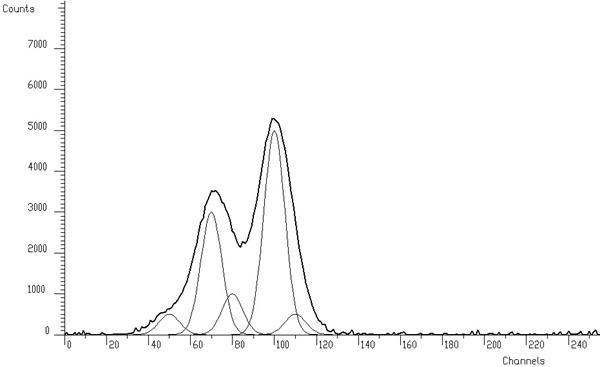

<?xml version="1.0"?>
<!DOCTYPE html PUBLIC "-//W3C//DTD XHTML 1.0 Transitional//EN" "http://www.w3.org/TR/xhtml1/DTD/xhtml1-transitional.dtd">
<html xmlns="http://www.w3.org/1999/xhtml" xml:lang="en" lang="en">
<!--                                             -->
<!-- Author: ROOT team (rootdev@pcroot.cern.ch)  -->
<!--                                             -->
<!--   Date: Thu Nov  3 20:23:05 2011            -->
<!--                                             -->
<head>
<meta http-equiv="Content-Type" content="text/html; charset=ISO-8859-1" />
<title>TSpectrum</title>
<meta name="rating" content="General" />
<meta name="objecttype" content="Manual" />
<meta name="keywords" content="software development, oo, object oriented, unix, x11, windows, c++, html, rene brun, fons rademakers, cern" />
<meta name="description" content="ROOT - An Object Oriented Framework For Large Scale Data Analysis." />
<link rel="stylesheet" type="text/css" href="ROOT.css" id="ROOTstyle" />
<script type="text/javascript" src="ROOT.js"></script>
</head>
<body  onload="javascript:SetValuesFromCookie();"><div id="body_content">
<div id="root_header"></div>
<a name="TopOfPage"></a>
<script type="text/javascript">WriteFollowPageBox('class TSpectrum','libSpectrum','TSpectrum.h');</script>
<div id="toplinks">
<div class="descrhead"><div class="descrheadcontent">
<span class="descrtitle">Quick Links:</span>
<a class="descrheadentry" href="http://root.cern.ch">ROOT Homepage</a>
<a class="descrheadentry" href="./ClassIndex.html">Class Index</a>
<a class="descrheadentry" href="./ClassHierarchy.html">Class Hierarchy</a></div>
<script type="text/javascript">
function onSearch() {
var s='http://www.google.com/search?q=%s+site%3A%u+-site%3A%u%2Fsrc%2F+-site%3A%u%2Fexamples%2F';
var ref=String(document.location.href).replace(/https?:\/\//,'').replace(/\/[^\/]*$/,'').replace(/\//g,'%2F');
window.location.href=s.replace(/%u/ig,ref).replace(/%s/ig,escape(document.searchform.t.value));
return false;}
</script>
<form id="searchform" name="searchform" onsubmit="return onSearch()" action="javascript:onSearch();" method="post">
<input name="t" size="30" value="Search documentation..." onfocus="if (document.searchform.t.value=='Search documentation...') document.searchform.t.value='';"></input>
<a id="searchlink"  title="www.google.com"  href="javascript:onSearch();" onclick="return onSearch()">Search</a></form>
</div>
<div class="descrhead"><div class="descrheadcontent">
<span class="descrtitle">Source:</span>
<a class="descrheadentry" href="src/TSpectrum.h.html">header file</a>
<a class="descrheadentry" href="src/TSpectrum.cxx.html">source file</a>
<a class="descrheadentry" href="http://root.cern.ch/viewcvs/trunk/hist/spectrum/inc/TSpectrum.h?view=log">viewVC header</a> <a class="descrheadentry" href="http://root.cern.ch/viewcvs/trunk/hist/spectrum/src/TSpectrum.cxx?view=log">viewVC source</a> 
</div></div>
<div class="descrhead"><div class="descrheadcontent">
<span class="descrtitle">Sections:</span>
<a class="descrheadentry" href="#TSpectrum:description">class description</a> 
<a class="descrheadentry" href="#TSpectrum:Function_Members">function members</a>
<a class="descrheadentry" href="#TSpectrum:Data_Members">data members</a>
<a class="descrheadentry" href="#TSpectrum:Class_Charts">class charts</a>
</div></div>
</div>
<div class="location">
<a class="locationlevel" href="index.html">ROOT</a>
 &#187; <a class="locationlevel" href="./HIST_Index.html">HIST</a>
 &#187; <a class="locationlevel" href="./HIST_SPECTRUM_Index.html">SPECTRUM</a>
 &#187; <a class="locationlevel" href="#TopOfPage">TSpectrum</a>
</div>
<div class="dropshadow"><div class="withshadow"><h1><a name="TSpectrum:description"></a>class TSpectrum: public <a href="./TNamed.html">TNamed</a></h1>
<div class="classdescr">
<pre>

</pre><!-- TDocHtmlDirective start --><center><h2>Advanced Spectra Processing</h2></center>
This class contains advanced spectra processing functions for:
<ul>
<li> One-dimensional background estimation
<li> One-dimensional smoothing
<li> One-dimensional deconvolution
<li> One-dimensional peak search
</ul>
<p>
Author:
<br>
<br> Miroslav Morhac
<br> Institute of Physics
<br> Slovak Academy of Sciences
<br> Dubravska cesta 9, 842 28 BRATISLAVA
<br> SLOVAKIA
<br> email:fyzimiro@savba.sk,    fax:+421 7 54772479
<br>
<br>
The original code in C has been repackaged as a C++ class by R.Brun.
<p>
The algorithms in this class have been published in the following references:
<ol>
<li> M.Morhac et al.: Background elimination methods for
multidimensional coincidence gamma-ray spectra. Nuclear
Instruments and Methods in Physics Research A 401 (1997) 113-132.
<li> M.Morhac et al.: Efficient one- and two-dimensional Gold
deconvolution and its application to gamma-ray spectra
decomposition. Nuclear Instruments and Methods in Physics
Research A 401 (1997) 385-408.
<li> M.Morhac et al.: Identification of peaks in multidimensional
coincidence gamma-ray spectra. Nuclear Instruments and Methods in
Research Physics A  443(2000), 108-125.
</ol>
These NIM papers are also available as doc or ps files from:
<ul>
<li> <A href="ftp://root.cern.ch/root/Spectrum.doc">Spectrum.doc</A><br>
<li> <A href="ftp://root.cern.ch/root/SpectrumDec.ps.gz">SpectrumDec.ps.gz</A><br>
<li> <A href="ftp://root.cern.ch/root/SpectrumSrc.ps.gz">SpectrumSrc.ps.gz</A><br>
<li> <A href="ftp://root.cern.ch/root/SpectrumBck.ps.gz">SpectrumBck.ps.gz</A><br>
</ul>
<!-- TDocHtmlDirective end --><pre> 
</pre></div>
</div></div>

<div id="functions">
<h2><a id="TSpectrum:Function_Members"></a>Function Members (Methods)</h2>
<div class="access" id="funcpubl"><b>public:</b>
<table class="func" id="tabfuncpubl" cellspacing="0">
<tr class="func"><td class="funcret"></td><td class="funcname"><a class="funcname" href="#TSpectrum:TSpectrum%1">TSpectrum</a>()</td></tr>
<tr class="func"><td class="funcret"></td><td class="funcname"><a class="funcname" href="#TSpectrum:TSpectrum%2">TSpectrum</a>(<a href="./ListOfTypes.html#Int_t">Int_t</a> maxpositions, <a href="./ListOfTypes.html#Float_t">Float_t</a> resolution = 1)</td></tr>
<tr class="func"><td class="funcret"> virtual</td><td class="funcname"><a class="funcname" href="#TSpectrum:_TSpectrum">~TSpectrum</a>()</td></tr>
<tr class="funcinh"><td class="funcret"><span class="keyword">void</span></td><td class="funcname"><a class="funcname" href="./TObject.html#TObject:AbstractMethod"><span class="baseclass">TObject::</span>AbstractMethod</a>(<span class="keyword">const</span> <span class="keyword">char</span>* method) <span class="keyword">const</span></td></tr>
<tr class="funcinh"><td class="funcret">virtual <span class="keyword">void</span></td><td class="funcname"><a class="funcname" href="./TObject.html#TObject:AppendPad"><span class="baseclass">TObject::</span>AppendPad</a>(<a href="./ListOfTypes.html#Option_t">Option_t</a>* option = <span class="string">""</span>)</td></tr>
<tr class="func"><td class="funcret">virtual <a href="./TH1.html">TH1</a>*</td><td class="funcname"><a class="funcname" href="#TSpectrum:Background">Background</a>(<span class="keyword">const</span> <a href="./TH1.html">TH1</a>* hist, <a href="./ListOfTypes.html#Int_t">Int_t</a> niter = 20, <a href="./ListOfTypes.html#Option_t">Option_t</a>* option = <span class="string">""</span>)</td></tr>
<tr class="func"><td class="funcret"><span class="keyword">const</span> <span class="keyword">char</span>*</td><td class="funcname"><a class="funcname" href="#TSpectrum:Background%1">Background</a>(<span class="keyword">float</span>* spectrum, <a href="./ListOfTypes.html#Int_t">Int_t</a> ssize, <a href="./ListOfTypes.html#Int_t">Int_t</a> numberIterations, <a href="./ListOfTypes.html#Int_t">Int_t</a> direction, <a href="./ListOfTypes.html#Int_t">Int_t</a> filterOrder, <span class="keyword">bool</span> smoothing, <a href="./ListOfTypes.html#Int_t">Int_t</a> smoothWindow, <span class="keyword">bool</span> compton)</td></tr>
<tr class="funcinh"><td class="funcret">virtual <span class="keyword">void</span></td><td class="funcname"><a class="funcname" href="./TObject.html#TObject:Browse"><span class="baseclass">TObject::</span>Browse</a>(<a href="./TBrowser.html">TBrowser</a>* b)</td></tr>
<tr class="func"><td class="funcret">static <a href="./TClass.html">TClass</a>*</td><td class="funcname"><a class="funcname" href="#TSpectrum:Class">Class</a>()</td></tr>
<tr class="funcinh"><td class="funcret">virtual <span class="keyword">const</span> <span class="keyword">char</span>*</td><td class="funcname"><a class="funcname" href="./TObject.html#TObject:ClassName"><span class="baseclass">TObject::</span>ClassName</a>() <span class="keyword">const</span></td></tr>
<tr class="funcinh"><td class="funcret">virtual <span class="keyword">void</span></td><td class="funcname"><a class="funcname" href="./TNamed.html#TNamed:Clear"><span class="baseclass">TNamed::</span>Clear</a>(<a href="./ListOfTypes.html#Option_t">Option_t</a>* option = <span class="string">""</span>)</td></tr>
<tr class="funcinh"><td class="funcret">virtual <a href="./TObject.html">TObject</a>*</td><td class="funcname"><a class="funcname" href="./TNamed.html#TNamed:Clone"><span class="baseclass">TNamed::</span>Clone</a>(<span class="keyword">const</span> <span class="keyword">char</span>* newname = <span class="string">""</span>) <span class="keyword">const</span></td></tr>
<tr class="funcinh"><td class="funcret">virtual <a href="./ListOfTypes.html#Int_t">Int_t</a></td><td class="funcname"><a class="funcname" href="./TNamed.html#TNamed:Compare"><span class="baseclass">TNamed::</span>Compare</a>(<span class="keyword">const</span> <a href="./TObject.html">TObject</a>* obj) <span class="keyword">const</span></td></tr>
<tr class="funcinh"><td class="funcret">virtual <span class="keyword">void</span></td><td class="funcname"><a class="funcname" href="./TNamed.html#TNamed:Copy"><span class="baseclass">TNamed::</span>Copy</a>(<a href="./TObject.html">TObject</a>&amp; named) <span class="keyword">const</span></td></tr>
<tr class="func"><td class="funcret"><span class="keyword">const</span> <span class="keyword">char</span>*</td><td class="funcname"><a class="funcname" href="#TSpectrum:Deconvolution">Deconvolution</a>(<span class="keyword">float</span>* source, <span class="keyword">const</span> <span class="keyword">float</span>* response, <a href="./ListOfTypes.html#Int_t">Int_t</a> ssize, <a href="./ListOfTypes.html#Int_t">Int_t</a> numberIterations, <a href="./ListOfTypes.html#Int_t">Int_t</a> numberRepetitions, <a href="./ListOfTypes.html#Double_t">Double_t</a> boost)</td></tr>
<tr class="func"><td class="funcret"><span class="keyword">const</span> <span class="keyword">char</span>*</td><td class="funcname"><a class="funcname" href="#TSpectrum:DeconvolutionRL">DeconvolutionRL</a>(<span class="keyword">float</span>* source, <span class="keyword">const</span> <span class="keyword">float</span>* response, <a href="./ListOfTypes.html#Int_t">Int_t</a> ssize, <a href="./ListOfTypes.html#Int_t">Int_t</a> numberIterations, <a href="./ListOfTypes.html#Int_t">Int_t</a> numberRepetitions, <a href="./ListOfTypes.html#Double_t">Double_t</a> boost)</td></tr>
<tr class="funcinh"><td class="funcret">virtual <span class="keyword">void</span></td><td class="funcname"><a class="funcname" href="./TObject.html#TObject:Delete"><span class="baseclass">TObject::</span>Delete</a>(<a href="./ListOfTypes.html#Option_t">Option_t</a>* option = <span class="string">""</span>)<span class="funcprop"><abbr title="has a popup menu entry">MENU</abbr> </span></td></tr>
<tr class="funcinh"><td class="funcret">virtual <a href="./ListOfTypes.html#Int_t">Int_t</a></td><td class="funcname"><a class="funcname" href="./TObject.html#TObject:DistancetoPrimitive"><span class="baseclass">TObject::</span>DistancetoPrimitive</a>(<a href="./ListOfTypes.html#Int_t">Int_t</a> px, <a href="./ListOfTypes.html#Int_t">Int_t</a> py)</td></tr>
<tr class="funcinh"><td class="funcret">virtual <span class="keyword">void</span></td><td class="funcname"><a class="funcname" href="./TObject.html#TObject:Draw"><span class="baseclass">TObject::</span>Draw</a>(<a href="./ListOfTypes.html#Option_t">Option_t</a>* option = <span class="string">""</span>)</td></tr>
<tr class="funcinh"><td class="funcret">virtual <span class="keyword">void</span></td><td class="funcname"><a class="funcname" href="./TObject.html#TObject:DrawClass"><span class="baseclass">TObject::</span>DrawClass</a>() <span class="keyword">const</span><span class="funcprop"><abbr title="has a popup menu entry">MENU</abbr> </span></td></tr>
<tr class="funcinh"><td class="funcret">virtual <a href="./TObject.html">TObject</a>*</td><td class="funcname"><a class="funcname" href="./TObject.html#TObject:DrawClone"><span class="baseclass">TObject::</span>DrawClone</a>(<a href="./ListOfTypes.html#Option_t">Option_t</a>* option = <span class="string">""</span>) <span class="keyword">const</span><span class="funcprop"><abbr title="has a popup menu entry">MENU</abbr> </span></td></tr>
<tr class="funcinh"><td class="funcret">virtual <span class="keyword">void</span></td><td class="funcname"><a class="funcname" href="./TObject.html#TObject:Dump"><span class="baseclass">TObject::</span>Dump</a>() <span class="keyword">const</span><span class="funcprop"><abbr title="has a popup menu entry">MENU</abbr> </span></td></tr>
<tr class="funcinh"><td class="funcret">virtual <span class="keyword">void</span></td><td class="funcname"><a class="funcname" href="./TObject.html#TObject:Error"><span class="baseclass">TObject::</span>Error</a>(<span class="keyword">const</span> <span class="keyword">char</span>* method, <span class="keyword">const</span> <span class="keyword">char</span>* msgfmt) <span class="keyword">const</span></td></tr>
<tr class="funcinh"><td class="funcret">virtual <span class="keyword">void</span></td><td class="funcname"><a class="funcname" href="./TObject.html#TObject:Execute"><span class="baseclass">TObject::</span>Execute</a>(<span class="keyword">const</span> <span class="keyword">char</span>* method, <span class="keyword">const</span> <span class="keyword">char</span>* params, <a href="./ListOfTypes.html#Int_t">Int_t</a>* error = 0)</td></tr>
<tr class="funcinh"><td class="funcret">virtual <span class="keyword">void</span></td><td class="funcname"><a class="funcname" href="./TObject.html#TObject:Execute%1"><span class="baseclass">TObject::</span>Execute</a>(<a href="./TMethod.html">TMethod</a>* method, <a href="./TObjArray.html">TObjArray</a>* params, <a href="./ListOfTypes.html#Int_t">Int_t</a>* error = 0)</td></tr>
<tr class="funcinh"><td class="funcret">virtual <span class="keyword">void</span></td><td class="funcname"><a class="funcname" href="./TObject.html#TObject:ExecuteEvent"><span class="baseclass">TObject::</span>ExecuteEvent</a>(<a href="./ListOfTypes.html#Int_t">Int_t</a> event, <a href="./ListOfTypes.html#Int_t">Int_t</a> px, <a href="./ListOfTypes.html#Int_t">Int_t</a> py)</td></tr>
<tr class="funcinh"><td class="funcret">virtual <span class="keyword">void</span></td><td class="funcname"><a class="funcname" href="./TObject.html#TObject:Fatal"><span class="baseclass">TObject::</span>Fatal</a>(<span class="keyword">const</span> <span class="keyword">char</span>* method, <span class="keyword">const</span> <span class="keyword">char</span>* msgfmt) <span class="keyword">const</span></td></tr>
<tr class="funcinh"><td class="funcret">virtual <span class="keyword">void</span></td><td class="funcname"><a class="funcname" href="./TNamed.html#TNamed:FillBuffer"><span class="baseclass">TNamed::</span>FillBuffer</a>(<span class="keyword">char</span>*&amp; buffer)</td></tr>
<tr class="funcinh"><td class="funcret">virtual <a href="./TObject.html">TObject</a>*</td><td class="funcname"><a class="funcname" href="./TObject.html#TObject:FindObject"><span class="baseclass">TObject::</span>FindObject</a>(<span class="keyword">const</span> <span class="keyword">char</span>* name) <span class="keyword">const</span></td></tr>
<tr class="funcinh"><td class="funcret">virtual <a href="./TObject.html">TObject</a>*</td><td class="funcname"><a class="funcname" href="./TObject.html#TObject:FindObject%1"><span class="baseclass">TObject::</span>FindObject</a>(<span class="keyword">const</span> <a href="./TObject.html">TObject</a>* obj) <span class="keyword">const</span></td></tr>
<tr class="funcinh"><td class="funcret">virtual <a href="./ListOfTypes.html#Option_t">Option_t</a>*</td><td class="funcname"><a class="funcname" href="./TObject.html#TObject:GetDrawOption"><span class="baseclass">TObject::</span>GetDrawOption</a>() <span class="keyword">const</span></td></tr>
<tr class="funcinh"><td class="funcret">static <a href="./ListOfTypes.html#Long_t">Long_t</a></td><td class="funcname"><a class="funcname" href="./TObject.html#TObject:GetDtorOnly"><span class="baseclass">TObject::</span>GetDtorOnly</a>()</td></tr>
<tr class="func"><td class="funcret"><a href="./TH1.html">TH1</a>*</td><td class="funcname"><a class="funcname" href="#TSpectrum:GetHistogram">GetHistogram</a>() <span class="keyword">const</span></td></tr>
<tr class="funcinh"><td class="funcret">virtual <span class="keyword">const</span> <span class="keyword">char</span>*</td><td class="funcname"><a class="funcname" href="./TObject.html#TObject:GetIconName"><span class="baseclass">TObject::</span>GetIconName</a>() <span class="keyword">const</span></td></tr>
<tr class="funcinh"><td class="funcret">virtual <span class="keyword">const</span> <span class="keyword">char</span>*</td><td class="funcname"><a class="funcname" href="./TNamed.html#TNamed:GetName"><span class="baseclass">TNamed::</span>GetName</a>() <span class="keyword">const</span></td></tr>
<tr class="func"><td class="funcret"><a href="./ListOfTypes.html#Int_t">Int_t</a></td><td class="funcname"><a class="funcname" href="#TSpectrum:GetNPeaks">GetNPeaks</a>() <span class="keyword">const</span></td></tr>
<tr class="funcinh"><td class="funcret">virtual <span class="keyword">char</span>*</td><td class="funcname"><a class="funcname" href="./TObject.html#TObject:GetObjectInfo"><span class="baseclass">TObject::</span>GetObjectInfo</a>(<a href="./ListOfTypes.html#Int_t">Int_t</a> px, <a href="./ListOfTypes.html#Int_t">Int_t</a> py) <span class="keyword">const</span></td></tr>
<tr class="funcinh"><td class="funcret">static <a href="./ListOfTypes.html#Bool_t">Bool_t</a></td><td class="funcname"><a class="funcname" href="./TObject.html#TObject:GetObjectStat"><span class="baseclass">TObject::</span>GetObjectStat</a>()</td></tr>
<tr class="funcinh"><td class="funcret">virtual <a href="./ListOfTypes.html#Option_t">Option_t</a>*</td><td class="funcname"><a class="funcname" href="./TObject.html#TObject:GetOption"><span class="baseclass">TObject::</span>GetOption</a>() <span class="keyword">const</span></td></tr>
<tr class="func"><td class="funcret"><a href="./ListOfTypes.html#Float_t">Float_t</a>*</td><td class="funcname"><a class="funcname" href="#TSpectrum:GetPositionX">GetPositionX</a>() <span class="keyword">const</span></td></tr>
<tr class="func"><td class="funcret"><a href="./ListOfTypes.html#Float_t">Float_t</a>*</td><td class="funcname"><a class="funcname" href="#TSpectrum:GetPositionY">GetPositionY</a>() <span class="keyword">const</span></td></tr>
<tr class="funcinh"><td class="funcret">virtual <span class="keyword">const</span> <span class="keyword">char</span>*</td><td class="funcname"><a class="funcname" href="./TNamed.html#TNamed:GetTitle"><span class="baseclass">TNamed::</span>GetTitle</a>() <span class="keyword">const</span></td></tr>
<tr class="funcinh"><td class="funcret">virtual <a href="./ListOfTypes.html#UInt_t">UInt_t</a></td><td class="funcname"><a class="funcname" href="./TObject.html#TObject:GetUniqueID"><span class="baseclass">TObject::</span>GetUniqueID</a>() <span class="keyword">const</span></td></tr>
<tr class="funcinh"><td class="funcret">virtual <a href="./ListOfTypes.html#Bool_t">Bool_t</a></td><td class="funcname"><a class="funcname" href="./TObject.html#TObject:HandleTimer"><span class="baseclass">TObject::</span>HandleTimer</a>(<a href="./TTimer.html">TTimer</a>* timer)</td></tr>
<tr class="funcinh"><td class="funcret">virtual <a href="./ListOfTypes.html#ULong_t">ULong_t</a></td><td class="funcname"><a class="funcname" href="./TNamed.html#TNamed:Hash"><span class="baseclass">TNamed::</span>Hash</a>() <span class="keyword">const</span></td></tr>
<tr class="funcinh"><td class="funcret">virtual <span class="keyword">void</span></td><td class="funcname"><a class="funcname" href="./TObject.html#TObject:Info"><span class="baseclass">TObject::</span>Info</a>(<span class="keyword">const</span> <span class="keyword">char</span>* method, <span class="keyword">const</span> <span class="keyword">char</span>* msgfmt) <span class="keyword">const</span></td></tr>
<tr class="funcinh"><td class="funcret">virtual <a href="./ListOfTypes.html#Bool_t">Bool_t</a></td><td class="funcname"><a class="funcname" href="./TObject.html#TObject:InheritsFrom"><span class="baseclass">TObject::</span>InheritsFrom</a>(<span class="keyword">const</span> <span class="keyword">char</span>* classname) <span class="keyword">const</span></td></tr>
<tr class="funcinh"><td class="funcret">virtual <a href="./ListOfTypes.html#Bool_t">Bool_t</a></td><td class="funcname"><a class="funcname" href="./TObject.html#TObject:InheritsFrom%1"><span class="baseclass">TObject::</span>InheritsFrom</a>(<span class="keyword">const</span> <a href="./TClass.html">TClass</a>* cl) <span class="keyword">const</span></td></tr>
<tr class="funcinh"><td class="funcret">virtual <span class="keyword">void</span></td><td class="funcname"><a class="funcname" href="./TObject.html#TObject:Inspect"><span class="baseclass">TObject::</span>Inspect</a>() <span class="keyword">const</span><span class="funcprop"><abbr title="has a popup menu entry">MENU</abbr> </span></td></tr>
<tr class="funcinh"><td class="funcret"><span class="keyword">void</span></td><td class="funcname"><a class="funcname" href="./TObject.html#TObject:InvertBit"><span class="baseclass">TObject::</span>InvertBit</a>(<a href="./ListOfTypes.html#UInt_t">UInt_t</a> f)</td></tr>
<tr class="func"><td class="funcret">virtual <a href="./TClass.html">TClass</a>*</td><td class="funcname"><a class="funcname" href="#TSpectrum:IsA">IsA</a>() <span class="keyword">const</span></td></tr>
<tr class="funcinh"><td class="funcret">virtual <a href="./ListOfTypes.html#Bool_t">Bool_t</a></td><td class="funcname"><a class="funcname" href="./TObject.html#TObject:IsEqual"><span class="baseclass">TObject::</span>IsEqual</a>(<span class="keyword">const</span> <a href="./TObject.html">TObject</a>* obj) <span class="keyword">const</span></td></tr>
<tr class="funcinh"><td class="funcret">virtual <a href="./ListOfTypes.html#Bool_t">Bool_t</a></td><td class="funcname"><a class="funcname" href="./TObject.html#TObject:IsFolder"><span class="baseclass">TObject::</span>IsFolder</a>() <span class="keyword">const</span></td></tr>
<tr class="funcinh"><td class="funcret"><a href="./ListOfTypes.html#Bool_t">Bool_t</a></td><td class="funcname"><a class="funcname" href="./TObject.html#TObject:IsOnHeap"><span class="baseclass">TObject::</span>IsOnHeap</a>() <span class="keyword">const</span></td></tr>
<tr class="funcinh"><td class="funcret">virtual <a href="./ListOfTypes.html#Bool_t">Bool_t</a></td><td class="funcname"><a class="funcname" href="./TNamed.html#TNamed:IsSortable"><span class="baseclass">TNamed::</span>IsSortable</a>() <span class="keyword">const</span></td></tr>
<tr class="funcinh"><td class="funcret"><a href="./ListOfTypes.html#Bool_t">Bool_t</a></td><td class="funcname"><a class="funcname" href="./TObject.html#TObject:IsZombie"><span class="baseclass">TObject::</span>IsZombie</a>() <span class="keyword">const</span></td></tr>
<tr class="funcinh"><td class="funcret">virtual <span class="keyword">void</span></td><td class="funcname"><a class="funcname" href="./TNamed.html#TNamed:ls"><span class="baseclass">TNamed::</span>ls</a>(<a href="./ListOfTypes.html#Option_t">Option_t</a>* option = <span class="string">""</span>) <span class="keyword">const</span></td></tr>
<tr class="funcinh"><td class="funcret"><span class="keyword">void</span></td><td class="funcname"><a class="funcname" href="./TObject.html#TObject:MayNotUse"><span class="baseclass">TObject::</span>MayNotUse</a>(<span class="keyword">const</span> <span class="keyword">char</span>* method) <span class="keyword">const</span></td></tr>
<tr class="funcinh"><td class="funcret">virtual <a href="./ListOfTypes.html#Bool_t">Bool_t</a></td><td class="funcname"><a class="funcname" href="./TObject.html#TObject:Notify"><span class="baseclass">TObject::</span>Notify</a>()</td></tr>
<tr class="funcinh"><td class="funcret"><span class="keyword">void</span></td><td class="funcname"><a class="funcname" href="./TObject.html#TObject:Obsolete"><span class="baseclass">TObject::</span>Obsolete</a>(<span class="keyword">const</span> <span class="keyword">char</span>* method, <span class="keyword">const</span> <span class="keyword">char</span>* asOfVers, <span class="keyword">const</span> <span class="keyword">char</span>* removedFromVers) <span class="keyword">const</span></td></tr>
<tr class="funcinh"><td class="funcret">static <span class="keyword">void</span></td><td class="funcname"><a class="funcname" href="./TObject.html#TObject:operator_delete"><span class="baseclass">TObject::</span>operator delete</a>(<span class="keyword">void</span>* ptr)</td></tr>
<tr class="funcinh"><td class="funcret">static <span class="keyword">void</span></td><td class="funcname"><a class="funcname" href="./TObject.html#TObject:operator_delete%1"><span class="baseclass">TObject::</span>operator delete</a>(<span class="keyword">void</span>* ptr, <span class="keyword">void</span>* vp)</td></tr>
<tr class="funcinh"><td class="funcret">static <span class="keyword">void</span></td><td class="funcname"><a class="funcname" href="./TObject.html#TObject:operator_delete[]"><span class="baseclass">TObject::</span>operator delete[]</a>(<span class="keyword">void</span>* ptr)</td></tr>
<tr class="funcinh"><td class="funcret">static <span class="keyword">void</span></td><td class="funcname"><a class="funcname" href="./TObject.html#TObject:operator_delete[]%1"><span class="baseclass">TObject::</span>operator delete[]</a>(<span class="keyword">void</span>* ptr, <span class="keyword">void</span>* vp)</td></tr>
<tr class="funcinh"><td class="funcret"><span class="keyword">void</span>*</td><td class="funcname"><a class="funcname" href="./TObject.html#TObject:operator_new"><span class="baseclass">TObject::</span>operator new</a>(<a href="./ListOfTypes.html#size_t">size_t</a> sz)</td></tr>
<tr class="funcinh"><td class="funcret"><span class="keyword">void</span>*</td><td class="funcname"><a class="funcname" href="./TObject.html#TObject:operator_new%1"><span class="baseclass">TObject::</span>operator new</a>(<a href="./ListOfTypes.html#size_t">size_t</a> sz, <span class="keyword">void</span>* vp)</td></tr>
<tr class="funcinh"><td class="funcret"><span class="keyword">void</span>*</td><td class="funcname"><a class="funcname" href="./TObject.html#TObject:operator_new[]"><span class="baseclass">TObject::</span>operator new[]</a>(<a href="./ListOfTypes.html#size_t">size_t</a> sz)</td></tr>
<tr class="funcinh"><td class="funcret"><span class="keyword">void</span>*</td><td class="funcname"><a class="funcname" href="./TObject.html#TObject:operator_new[]%1"><span class="baseclass">TObject::</span>operator new[]</a>(<a href="./ListOfTypes.html#size_t">size_t</a> sz, <span class="keyword">void</span>* vp)</td></tr>
<tr class="funcinh"><td class="funcret">virtual <span class="keyword">void</span></td><td class="funcname"><a class="funcname" href="./TObject.html#TObject:Paint"><span class="baseclass">TObject::</span>Paint</a>(<a href="./ListOfTypes.html#Option_t">Option_t</a>* option = <span class="string">""</span>)</td></tr>
<tr class="funcinh"><td class="funcret">virtual <span class="keyword">void</span></td><td class="funcname"><a class="funcname" href="./TObject.html#TObject:Pop"><span class="baseclass">TObject::</span>Pop</a>()</td></tr>
<tr class="func"><td class="funcret">virtual <span class="keyword">void</span></td><td class="funcname"><a class="funcname" href="#TSpectrum:Print">Print</a>(<a href="./ListOfTypes.html#Option_t">Option_t</a>* option = <span class="string">""</span>) <span class="keyword">const</span></td></tr>
<tr class="funcinh"><td class="funcret">virtual <a href="./ListOfTypes.html#Int_t">Int_t</a></td><td class="funcname"><a class="funcname" href="./TObject.html#TObject:Read"><span class="baseclass">TObject::</span>Read</a>(<span class="keyword">const</span> <span class="keyword">char</span>* name)</td></tr>
<tr class="funcinh"><td class="funcret">virtual <span class="keyword">void</span></td><td class="funcname"><a class="funcname" href="./TObject.html#TObject:RecursiveRemove"><span class="baseclass">TObject::</span>RecursiveRemove</a>(<a href="./TObject.html">TObject</a>* obj)</td></tr>
<tr class="funcinh"><td class="funcret"><span class="keyword">void</span></td><td class="funcname"><a class="funcname" href="./TObject.html#TObject:ResetBit"><span class="baseclass">TObject::</span>ResetBit</a>(<a href="./ListOfTypes.html#UInt_t">UInt_t</a> f)</td></tr>
<tr class="funcinh"><td class="funcret">virtual <span class="keyword">void</span></td><td class="funcname"><a class="funcname" href="./TObject.html#TObject:SaveAs"><span class="baseclass">TObject::</span>SaveAs</a>(<span class="keyword">const</span> <span class="keyword">char</span>* filename = <span class="string">""</span>, <a href="./ListOfTypes.html#Option_t">Option_t</a>* option = <span class="string">""</span>) <span class="keyword">const</span><span class="funcprop"><abbr title="has a popup menu entry">MENU</abbr> </span></td></tr>
<tr class="funcinh"><td class="funcret">virtual <span class="keyword">void</span></td><td class="funcname"><a class="funcname" href="./TObject.html#TObject:SavePrimitive"><span class="baseclass">TObject::</span>SavePrimitive</a>(<a href="./ListOfTypes.html#ostream">ostream</a>&amp; out, <a href="./ListOfTypes.html#Option_t">Option_t</a>* option = <span class="string">""</span>)</td></tr>
<tr class="func"><td class="funcret">virtual <a href="./ListOfTypes.html#Int_t">Int_t</a></td><td class="funcname"><a class="funcname" href="#TSpectrum:Search">Search</a>(<span class="keyword">const</span> <a href="./TH1.html">TH1</a>* hist, <a href="./ListOfTypes.html#Double_t">Double_t</a> sigma = 2, <a href="./ListOfTypes.html#Option_t">Option_t</a>* option = <span class="string">""</span>, <a href="./ListOfTypes.html#Double_t">Double_t</a> threshold = 0.05)</td></tr>
<tr class="func"><td class="funcret"><a href="./ListOfTypes.html#Int_t">Int_t</a></td><td class="funcname"><a class="funcname" href="#TSpectrum:Search1HighRes">Search1HighRes</a>(<span class="keyword">float</span>* source, <span class="keyword">float</span>* destVector, <a href="./ListOfTypes.html#Int_t">Int_t</a> ssize, <span class="keyword">float</span> sigma, <a href="./ListOfTypes.html#Double_t">Double_t</a> threshold, <span class="keyword">bool</span> backgroundRemove, <a href="./ListOfTypes.html#Int_t">Int_t</a> deconIterations, <span class="keyword">bool</span> markov, <a href="./ListOfTypes.html#Int_t">Int_t</a> averWindow)</td></tr>
<tr class="func"><td class="funcret"><a href="./ListOfTypes.html#Int_t">Int_t</a></td><td class="funcname"><a class="funcname" href="#TSpectrum:SearchHighRes">SearchHighRes</a>(<span class="keyword">float</span>* source, <span class="keyword">float</span>* destVector, <a href="./ListOfTypes.html#Int_t">Int_t</a> ssize, <span class="keyword">float</span> sigma, <a href="./ListOfTypes.html#Double_t">Double_t</a> threshold, <span class="keyword">bool</span> backgroundRemove, <a href="./ListOfTypes.html#Int_t">Int_t</a> deconIterations, <span class="keyword">bool</span> markov, <a href="./ListOfTypes.html#Int_t">Int_t</a> averWindow)</td></tr>
<tr class="func"><td class="funcret">static <span class="keyword">void</span></td><td class="funcname"><a class="funcname" href="#TSpectrum:SetAverageWindow">SetAverageWindow</a>(<a href="./ListOfTypes.html#Int_t">Int_t</a> w = 3)</td></tr>
<tr class="funcinh"><td class="funcret"><span class="keyword">void</span></td><td class="funcname"><a class="funcname" href="./TObject.html#TObject:SetBit%1"><span class="baseclass">TObject::</span>SetBit</a>(<a href="./ListOfTypes.html#UInt_t">UInt_t</a> f)</td></tr>
<tr class="funcinh"><td class="funcret"><span class="keyword">void</span></td><td class="funcname"><a class="funcname" href="./TObject.html#TObject:SetBit"><span class="baseclass">TObject::</span>SetBit</a>(<a href="./ListOfTypes.html#UInt_t">UInt_t</a> f, <a href="./ListOfTypes.html#Bool_t">Bool_t</a> set)</td></tr>
<tr class="func"><td class="funcret">static <span class="keyword">void</span></td><td class="funcname"><a class="funcname" href="#TSpectrum:SetDeconIterations">SetDeconIterations</a>(<a href="./ListOfTypes.html#Int_t">Int_t</a> n = 3)</td></tr>
<tr class="funcinh"><td class="funcret">virtual <span class="keyword">void</span></td><td class="funcname"><a class="funcname" href="./TObject.html#TObject:SetDrawOption"><span class="baseclass">TObject::</span>SetDrawOption</a>(<a href="./ListOfTypes.html#Option_t">Option_t</a>* option = <span class="string">""</span>)<span class="funcprop"><abbr title="has a popup menu entry">MENU</abbr> </span></td></tr>
<tr class="funcinh"><td class="funcret">static <span class="keyword">void</span></td><td class="funcname"><a class="funcname" href="./TObject.html#TObject:SetDtorOnly"><span class="baseclass">TObject::</span>SetDtorOnly</a>(<span class="keyword">void</span>* obj)</td></tr>
<tr class="funcinh"><td class="funcret">virtual <span class="keyword">void</span></td><td class="funcname"><a class="funcname" href="./TNamed.html#TNamed:SetName"><span class="baseclass">TNamed::</span>SetName</a>(<span class="keyword">const</span> <span class="keyword">char</span>* name)<span class="funcprop"><abbr title="has a popup menu entry">MENU</abbr> </span></td></tr>
<tr class="funcinh"><td class="funcret">virtual <span class="keyword">void</span></td><td class="funcname"><a class="funcname" href="./TNamed.html#TNamed:SetNameTitle"><span class="baseclass">TNamed::</span>SetNameTitle</a>(<span class="keyword">const</span> <span class="keyword">char</span>* name, <span class="keyword">const</span> <span class="keyword">char</span>* title)</td></tr>
<tr class="funcinh"><td class="funcret">static <span class="keyword">void</span></td><td class="funcname"><a class="funcname" href="./TObject.html#TObject:SetObjectStat"><span class="baseclass">TObject::</span>SetObjectStat</a>(<a href="./ListOfTypes.html#Bool_t">Bool_t</a> stat)</td></tr>
<tr class="func"><td class="funcret"><span class="keyword">void</span></td><td class="funcname"><a class="funcname" href="#TSpectrum:SetResolution">SetResolution</a>(<a href="./ListOfTypes.html#Float_t">Float_t</a> resolution = 1)</td></tr>
<tr class="funcinh"><td class="funcret">virtual <span class="keyword">void</span></td><td class="funcname"><a class="funcname" href="./TNamed.html#TNamed:SetTitle"><span class="baseclass">TNamed::</span>SetTitle</a>(<span class="keyword">const</span> <span class="keyword">char</span>* title = <span class="string">""</span>)<span class="funcprop"><abbr title="has a popup menu entry">MENU</abbr> </span></td></tr>
<tr class="funcinh"><td class="funcret">virtual <span class="keyword">void</span></td><td class="funcname"><a class="funcname" href="./TObject.html#TObject:SetUniqueID"><span class="baseclass">TObject::</span>SetUniqueID</a>(<a href="./ListOfTypes.html#UInt_t">UInt_t</a> uid)</td></tr>
<tr class="func"><td class="funcret">virtual <span class="keyword">void</span></td><td class="funcname"><a class="funcname" href="#TSpectrum:ShowMembers">ShowMembers</a>(<a href="./TMemberInspector.html">TMemberInspector</a>&amp; insp)</td></tr>
<tr class="funcinh"><td class="funcret">virtual <a href="./ListOfTypes.html#Int_t">Int_t</a></td><td class="funcname"><a class="funcname" href="./TNamed.html#TNamed:Sizeof"><span class="baseclass">TNamed::</span>Sizeof</a>() <span class="keyword">const</span></td></tr>
<tr class="func"><td class="funcret"><span class="keyword">const</span> <span class="keyword">char</span>*</td><td class="funcname"><a class="funcname" href="#TSpectrum:SmoothMarkov">SmoothMarkov</a>(<span class="keyword">float</span>* source, <a href="./ListOfTypes.html#Int_t">Int_t</a> ssize, <a href="./ListOfTypes.html#Int_t">Int_t</a> averWindow)</td></tr>
<tr class="func"><td class="funcret">static <a href="./TH1.html">TH1</a>*</td><td class="funcname"><a class="funcname" href="#TSpectrum:StaticBackground">StaticBackground</a>(<span class="keyword">const</span> <a href="./TH1.html">TH1</a>* hist, <a href="./ListOfTypes.html#Int_t">Int_t</a> niter = 20, <a href="./ListOfTypes.html#Option_t">Option_t</a>* option = <span class="string">""</span>)</td></tr>
<tr class="func"><td class="funcret">static <a href="./ListOfTypes.html#Int_t">Int_t</a></td><td class="funcname"><a class="funcname" href="#TSpectrum:StaticSearch">StaticSearch</a>(<span class="keyword">const</span> <a href="./TH1.html">TH1</a>* hist, <a href="./ListOfTypes.html#Double_t">Double_t</a> sigma = 2, <a href="./ListOfTypes.html#Option_t">Option_t</a>* option = <span class="string">"goff"</span>, <a href="./ListOfTypes.html#Double_t">Double_t</a> threshold = 0.05)</td></tr>
<tr class="func"><td class="funcret">virtual <span class="keyword">void</span></td><td class="funcname"><a class="funcname" href="#TSpectrum:Streamer">Streamer</a>(<a href="./TBuffer.html">TBuffer</a>&amp; b)</td></tr>
<tr class="func"><td class="funcret"><span class="keyword">void</span></td><td class="funcname"><a class="funcname" href="#TSpectrum:StreamerNVirtual">StreamerNVirtual</a>(<a href="./TBuffer.html">TBuffer</a>&amp; b)</td></tr>
<tr class="funcinh"><td class="funcret">virtual <span class="keyword">void</span></td><td class="funcname"><a class="funcname" href="./TObject.html#TObject:SysError"><span class="baseclass">TObject::</span>SysError</a>(<span class="keyword">const</span> <span class="keyword">char</span>* method, <span class="keyword">const</span> <span class="keyword">char</span>* msgfmt) <span class="keyword">const</span></td></tr>
<tr class="funcinh"><td class="funcret"><a href="./ListOfTypes.html#Bool_t">Bool_t</a></td><td class="funcname"><a class="funcname" href="./TObject.html#TObject:TestBit"><span class="baseclass">TObject::</span>TestBit</a>(<a href="./ListOfTypes.html#UInt_t">UInt_t</a> f) <span class="keyword">const</span></td></tr>
<tr class="funcinh"><td class="funcret"><a href="./ListOfTypes.html#Int_t">Int_t</a></td><td class="funcname"><a class="funcname" href="./TObject.html#TObject:TestBits"><span class="baseclass">TObject::</span>TestBits</a>(<a href="./ListOfTypes.html#UInt_t">UInt_t</a> f) <span class="keyword">const</span></td></tr>
<tr class="func"><td class="funcret"><span class="keyword">const</span> <span class="keyword">char</span>*</td><td class="funcname"><a class="funcname" href="#TSpectrum:Unfolding">Unfolding</a>(<span class="keyword">float</span>* source, <span class="keyword">const</span> <span class="keyword">float</span>** respMatrix, <a href="./ListOfTypes.html#Int_t">Int_t</a> ssizex, <a href="./ListOfTypes.html#Int_t">Int_t</a> ssizey, <a href="./ListOfTypes.html#Int_t">Int_t</a> numberIterations, <a href="./ListOfTypes.html#Int_t">Int_t</a> numberRepetitions, <a href="./ListOfTypes.html#Double_t">Double_t</a> boost)</td></tr>
<tr class="funcinh"><td class="funcret">virtual <span class="keyword">void</span></td><td class="funcname"><a class="funcname" href="./TObject.html#TObject:UseCurrentStyle"><span class="baseclass">TObject::</span>UseCurrentStyle</a>()</td></tr>
<tr class="funcinh"><td class="funcret">virtual <span class="keyword">void</span></td><td class="funcname"><a class="funcname" href="./TObject.html#TObject:Warning"><span class="baseclass">TObject::</span>Warning</a>(<span class="keyword">const</span> <span class="keyword">char</span>* method, <span class="keyword">const</span> <span class="keyword">char</span>* msgfmt) <span class="keyword">const</span></td></tr>
<tr class="funcinh"><td class="funcret">virtual <a href="./ListOfTypes.html#Int_t">Int_t</a></td><td class="funcname"><a class="funcname" href="./TObject.html#TObject:Write"><span class="baseclass">TObject::</span>Write</a>(<span class="keyword">const</span> <span class="keyword">char</span>* name = 0, <a href="./ListOfTypes.html#Int_t">Int_t</a> option = 0, <a href="./ListOfTypes.html#Int_t">Int_t</a> bufsize = 0)</td></tr>
<tr class="funcinh"><td class="funcret">virtual <a href="./ListOfTypes.html#Int_t">Int_t</a></td><td class="funcname"><a class="funcname" href="./TObject.html#TObject:Write%1"><span class="baseclass">TObject::</span>Write</a>(<span class="keyword">const</span> <span class="keyword">char</span>* name = 0, <a href="./ListOfTypes.html#Int_t">Int_t</a> option = 0, <a href="./ListOfTypes.html#Int_t">Int_t</a> bufsize = 0) <span class="keyword">const</span></td></tr>

</table></div>
<div class="access" id="funcprot"><b>protected:</b>
<table class="func" id="tabfuncprot" cellspacing="0">
<tr class="funcinh"><td class="funcret">virtual <span class="keyword">void</span></td><td class="funcname"><a class="funcname" href="./TObject.html#TObject:DoError"><span class="baseclass">TObject::</span>DoError</a>(<span class="keyword">int</span> level, <span class="keyword">const</span> <span class="keyword">char</span>* location, <span class="keyword">const</span> <span class="keyword">char</span>* fmt, va_list va) <span class="keyword">const</span></td></tr>
<tr class="funcinh"><td class="funcret"><span class="keyword">void</span></td><td class="funcname"><a class="funcname" href="./TObject.html#TObject:MakeZombie"><span class="baseclass">TObject::</span>MakeZombie</a>()</td></tr>

</table></div>
<div class="access" id="funcpriv"><b>private:</b>
<table class="func" id="tabfuncpriv" cellspacing="0">
<tr class="func"><td class="funcret"></td><td class="funcname"><a class="funcname" href="#TSpectrum:TSpectrum">TSpectrum</a>(<span class="keyword">const</span> <a href="./TSpectrum.html">TSpectrum</a>&amp;)</td></tr>
<tr class="func"><td class="funcret"><a href="./TSpectrum.html">TSpectrum</a>&amp;</td><td class="funcname"><a class="funcname" href="#TSpectrum:operator_">operator=</a>(<span class="keyword">const</span> <a href="./TSpectrum.html">TSpectrum</a>&amp;)</td></tr>

</table></div>
</div>

<div id="datamembers">
<h2><a name="TSpectrum:Data_Members"></a>Data Members</h2>
<div class="access" id="enumpubl"><b>public:</b>
<table class="data" id="tabenumpubl" cellspacing="0">
<tr class="data"><td class="datatype">enum  { </td><td class="dataname"><a name="TSpectrum:kBackOrder2"></a>kBackOrder2</td><td></td></tr>
<tr class="data"><td class="datatype"></td><td class="dataname"><a name="TSpectrum:kBackOrder4"></a>kBackOrder4</td><td></td></tr>
<tr class="data"><td class="datatype"></td><td class="dataname"><a name="TSpectrum:kBackOrder6"></a>kBackOrder6</td><td></td></tr>
<tr class="data"><td class="datatype"></td><td class="dataname"><a name="TSpectrum:kBackOrder8"></a>kBackOrder8</td><td></td></tr>
<tr class="data"><td class="datatype"></td><td class="dataname"><a name="TSpectrum:kBackIncreasingWindow"></a>kBackIncreasingWindow</td><td></td></tr>
<tr class="data"><td class="datatype"></td><td class="dataname"><a name="TSpectrum:kBackDecreasingWindow"></a>kBackDecreasingWindow</td><td></td></tr>
<tr class="data"><td class="datatype"></td><td class="dataname"><a name="TSpectrum:kBackSmoothing3"></a>kBackSmoothing3</td><td></td></tr>
<tr class="data"><td class="datatype"></td><td class="dataname"><a name="TSpectrum:kBackSmoothing5"></a>kBackSmoothing5</td><td></td></tr>
<tr class="data"><td class="datatype"></td><td class="dataname"><a name="TSpectrum:kBackSmoothing7"></a>kBackSmoothing7</td><td></td></tr>
<tr class="data"><td class="datatype"></td><td class="dataname"><a name="TSpectrum:kBackSmoothing9"></a>kBackSmoothing9</td><td></td></tr>
<tr class="data"><td class="datatype"></td><td class="dataname"><a name="TSpectrum:kBackSmoothing11"></a>kBackSmoothing11</td><td></td></tr>
<tr class="data"><td class="datatype"></td><td class="dataname"><a name="TSpectrum:kBackSmoothing13"></a>kBackSmoothing13</td><td></td></tr>
<tr class="data"><td class="datatype"></td><td class="dataname"><a name="TSpectrum:kBackSmoothing15"></a>kBackSmoothing15</td><td></td></tr>
<tr class="data"><td class="datatype">};</td><td></td><td></td></tr>
<tr class="datainh"><td class="datatype">enum <span class="baseclass">TObject::</span>EStatusBits { </td><td class="dataname"><a href="./TObject.html#TObject:kCanDelete">kCanDelete</a></td><td></td></tr>
<tr class="datainh"><td class="datatype"></td><td class="dataname"><a href="./TObject.html#TObject:kMustCleanup">kMustCleanup</a></td><td></td></tr>
<tr class="datainh"><td class="datatype"></td><td class="dataname"><a href="./TObject.html#TObject:kObjInCanvas">kObjInCanvas</a></td><td></td></tr>
<tr class="datainh"><td class="datatype"></td><td class="dataname"><a href="./TObject.html#TObject:kIsReferenced">kIsReferenced</a></td><td></td></tr>
<tr class="datainh"><td class="datatype"></td><td class="dataname"><a href="./TObject.html#TObject:kHasUUID">kHasUUID</a></td><td></td></tr>
<tr class="datainh"><td class="datatype"></td><td class="dataname"><a href="./TObject.html#TObject:kCannotPick">kCannotPick</a></td><td></td></tr>
<tr class="datainh"><td class="datatype"></td><td class="dataname"><a href="./TObject.html#TObject:kNoContextMenu">kNoContextMenu</a></td><td></td></tr>
<tr class="datainh"><td class="datatype"></td><td class="dataname"><a href="./TObject.html#TObject:kInvalidObject">kInvalidObject</a></td><td></td></tr>
<tr class="datainh"><td class="datatype">};</td><td></td><td></td></tr>
<tr class="datainh"><td class="datatype">enum <span class="baseclass">TObject::</span><i>[unnamed]</i> { </td><td class="dataname"><a href="./TObject.html#TObject:kIsOnHeap">kIsOnHeap</a></td><td></td></tr>
<tr class="datainh"><td class="datatype"></td><td class="dataname"><a href="./TObject.html#TObject:kNotDeleted">kNotDeleted</a></td><td></td></tr>
<tr class="datainh"><td class="datatype"></td><td class="dataname"><a href="./TObject.html#TObject:kZombie">kZombie</a></td><td></td></tr>
<tr class="datainh"><td class="datatype"></td><td class="dataname"><a href="./TObject.html#TObject:kBitMask">kBitMask</a></td><td></td></tr>
<tr class="datainh"><td class="datatype"></td><td class="dataname"><a href="./TObject.html#TObject:kSingleKey">kSingleKey</a></td><td></td></tr>
<tr class="datainh"><td class="datatype"></td><td class="dataname"><a href="./TObject.html#TObject:kOverwrite">kOverwrite</a></td><td></td></tr>
<tr class="datainh"><td class="datatype"></td><td class="dataname"><a href="./TObject.html#TObject:kWriteDelete">kWriteDelete</a></td><td></td></tr>
<tr class="datainh"><td class="datatype">};</td><td></td><td></td></tr>

</table></div>
<div class="access" id="dataprot"><b>protected:</b>
<table class="data" id="tabdataprot" cellspacing="0">
<tr class="data"><td class="datatype"><a href="./TH1.html">TH1</a>*</td><td class="dataname"><a name="TSpectrum:fHistogram"></a>fHistogram</td><td class="datadesc">resulting histogram</td></tr>
<tr class="data"><td class="datatype"><a href="./ListOfTypes.html#Int_t">Int_t</a></td><td class="dataname"><a name="TSpectrum:fMaxPeaks"></a>fMaxPeaks</td><td class="datadesc">Maximum number of peaks to be found</td></tr>
<tr class="data"><td class="datatype"><a href="./ListOfTypes.html#Int_t">Int_t</a></td><td class="dataname"><a name="TSpectrum:fNPeaks"></a>fNPeaks</td><td class="datadesc">number of peaks found</td></tr>
<tr class="datainh"><td class="datatype"><a href="./TString.html">TString</a></td><td class="dataname"><a href="./TNamed.html#TNamed:fName"><span class="baseclass">TNamed::</span>fName</a></td><td class="datadesc">object identifier</td></tr>
<tr class="data"><td class="datatype"><a href="./ListOfTypes.html#Float_t">Float_t</a>*</td><td class="dataname"><a name="TSpectrum:fPosition"></a>fPosition</td><td class="datadesc">[fNPeaks] array of current peak positions</td></tr>
<tr class="data"><td class="datatype"><a href="./ListOfTypes.html#Float_t">Float_t</a>*</td><td class="dataname"><a name="TSpectrum:fPositionX"></a>fPositionX</td><td class="datadesc">[fNPeaks] X position of peaks</td></tr>
<tr class="data"><td class="datatype"><a href="./ListOfTypes.html#Float_t">Float_t</a>*</td><td class="dataname"><a name="TSpectrum:fPositionY"></a>fPositionY</td><td class="datadesc">[fNPeaks] Y position of peaks</td></tr>
<tr class="data"><td class="datatype"><a href="./ListOfTypes.html#Float_t">Float_t</a></td><td class="dataname"><a name="TSpectrum:fResolution"></a>fResolution</td><td class="datadesc">resolution of the neighboring peaks</td></tr>
<tr class="datainh"><td class="datatype"><a href="./TString.html">TString</a></td><td class="dataname"><a href="./TNamed.html#TNamed:fTitle"><span class="baseclass">TNamed::</span>fTitle</a></td><td class="datadesc">object title</td></tr>
<tr class="data"><td class="datatype">static <a href="./ListOfTypes.html#Int_t">Int_t</a></td><td class="dataname"><a name="TSpectrum:fgAverageWindow"></a>fgAverageWindow</td><td class="datadesc">Average window of searched peaks</td></tr>
<tr class="data"><td class="datatype">static <a href="./ListOfTypes.html#Int_t">Int_t</a></td><td class="dataname"><a name="TSpectrum:fgIterations"></a>fgIterations</td><td class="datadesc">Maximum number of decon iterations (default=3)</td></tr>

</table></div>
</div>
<h2><a id="TSpectrum:Class_Charts"></a>Class Charts</h2>
<map name="MapTSpectrum_Inh" id="MapTSpectrum_Inh">
<area shape="rect" href="./TNamed.html" title="TNamed" alt="" coords="317,12,423,42"/>
<area shape="rect" href="./TObject.html" title="TObject" alt="" coords="45,12,144,42"/>
</map>
<map name="MapTSpectrum_InhMem" id="MapTSpectrum_InhMem">
<area shape="rect" href="./TNamed.html" alt="" coords="344,60,629,109"/>
<area shape="rect" href="./TNamed.html" alt="" coords="541,120,629,297"/>
<area shape="rect" href="./TNamed.html" alt="" coords="443,120,531,297"/>
<area shape="rect" href="./TNamed.html" alt="" coords="344,120,432,297"/>
<area shape="rect" href="./TNamed.html" title="TNamed" alt="" coords="333,16,640,308"/>
<area shape="rect" href="./TObject.html" alt="" coords="224,60,312,183"/>
<area shape="rect" href="./TObject.html" alt="" coords="125,60,213,197"/>
<area shape="rect" href="./TObject.html" alt="" coords="27,60,115,197"/>
<area shape="rect" href="./TObject.html" alt="" coords="256,193,280,228"/>
<area shape="rect" href="./TObject.html" alt="" coords="224,239,312,665"/>
<area shape="rect" href="./TObject.html" alt="" coords="125,224,213,665"/>
<area shape="rect" href="./TObject.html" alt="" coords="27,224,115,665"/>
<area shape="rect" href="./TObject.html" title="TObject" alt="" coords="16,16,323,676"/>
</map>
<map name="MapTSpectrum_Lib" id="MapTSpectrum_Lib">
<area shape="rect" href="LibraryDependencies.html" title="All Libraries" alt="" coords="463,121,591,169"/>
</map>
<div class="tabs">
<a id="imgTSpectrum_Inh" class="tabsel" href="inh/TSpectrum_Inh.png" onclick="javascript:return SetImg('Charts','inh/TSpectrum_Inh.png');">Inheritance</a>
<a id="imgTSpectrum_InhMem" class="tab" href="inhmem/TSpectrum_InhMem.png" onclick="javascript:return SetImg('Charts','inhmem/TSpectrum_InhMem.png');">Inherited Members</a>
<a id="imgTSpectrum_Incl" class="tab" href="incl/TSpectrum_Incl.png" onclick="javascript:return SetImg('Charts','incl/TSpectrum_Incl.png');">Includes</a>
<a id="imgTSpectrum_Lib" class="tab" href="lib/TSpectrum_Lib.png" onclick="javascript:return SetImg('Charts','lib/TSpectrum_Lib.png');">Libraries</a><br/>
</div><div class="classcharts"><div class="classchartswidth"></div>
</div>
<h2>Function documentation</h2>
<div class="funcdoc"><span class="funcname"> <a class="funcname" name="TSpectrum:TSpectrum%1" href="src/TSpectrum.cxx.html#kOCewE">TSpectrum</a>()</span><br />
<div class="funccomm"><pre>
</pre><!-- TDocHtmlDirective start -->   Constructor.
   
<!-- TDocHtmlDirective end --><pre> 
</pre></div>
</div>
<div class="funcdoc"><span class="funcname"> <a class="funcname" name="TSpectrum:TSpectrum%2" href="src/TSpectrum.cxx.html#S.cH6E">TSpectrum</a>(<a href="./ListOfTypes.html#Int_t">Int_t</a> maxpositions, <a href="./ListOfTypes.html#Float_t">Float_t</a> resolution = 1)</span><br />
<div class="funccomm"><pre>
</pre><!-- TDocHtmlDirective start -->   <ul>
   <li> maxpositions: maximum number of peaks
   <li> resolution: determines resolution of the neighboring peaks
                   default value is 1 correspond to 3 sigma distance
                   between peaks. Higher values allow higher resolution
                   (smaller distance between peaks.
                   May be set later through SetResolution.
   </ul>
   
<!-- TDocHtmlDirective end --><pre> 
</pre></div>
</div>
<div class="funcdoc"><span class="funcname"> <a class="funcname" name="TSpectrum:_TSpectrum" href="src/TSpectrum.cxx.html#b81ByB">~TSpectrum</a>()</span><br />
<div class="funccomm"><pre>
</pre><!-- TDocHtmlDirective start -->   Destructor.
   
<!-- TDocHtmlDirective end --><pre> 
</pre></div>
</div>
<div class="funcdoc"><span class="funcname"><span class="keyword">void</span> <a class="funcname" name="TSpectrum:SetAverageWindow" href="src/TSpectrum.cxx.html#BL_HYE">SetAverageWindow</a>(<a href="./ListOfTypes.html#Int_t">Int_t</a> w = 3)</span><br />
<div class="funccomm"><pre>
</pre><!-- TDocHtmlDirective start -->   Static function: Set average window of searched peaks
   (see TSpectrum::SearchHighRes).
   
<!-- TDocHtmlDirective end --><pre> 
</pre></div>
</div>
<div class="funcdoc"><span class="funcname"><span class="keyword">void</span> <a class="funcname" name="TSpectrum:SetDeconIterations" href="src/TSpectrum.cxx.html#Wc4zOD">SetDeconIterations</a>(<a href="./ListOfTypes.html#Int_t">Int_t</a> n = 3)</span><br />
<div class="funccomm"><pre>
</pre><!-- TDocHtmlDirective start -->   Static function: Set max number of decon iterations in deconvolution
   operation (see TSpectrum::SearchHighRes).
   
<!-- TDocHtmlDirective end --><pre> 
</pre></div>
</div>
<div class="funcdoc"><span class="funcname"><a href="./TH1.html">TH1</a> * <a class="funcname" name="TSpectrum:Background" href="src/TSpectrum.cxx.html#xjd.FB">Background</a>(<span class="keyword">const</span> <a href="./TH1.html">TH1</a>* hist, <a href="./ListOfTypes.html#Int_t">Int_t</a> niter = 20, <a href="./ListOfTypes.html#Option_t">Option_t</a>* option = <span class="string">""</span>)</span><br />
<div class="funccomm"><pre>
</pre><!-- TDocHtmlDirective start -->   <b>One-dimensional background estimation function.</b>
   <p>
   This function calculates the background spectrum in the input histogram h.
   The background is returned as a histogram.
   <p>
   Function parameters:
   <ul>
   <li> h: input 1-d histogram
   <li> numberIterations, (default value = 20)
      Increasing numberIterations make the result smoother and lower.
   <li> option: may contain one of the following options:
      <ul>
      <li> to set the direction parameter
      "BackIncreasingWindow". By default the direction is BackDecreasingWindow
      <li> filterOrder-order of clipping filter,  (default "BackOrder2")
                  -possible values= "BackOrder4"
                                    "BackOrder6"
                                    "BackOrder8"
      <li> "nosmoothing"- if selected, the background is not smoothed
           By default the background is smoothed.
      <li> smoothWindow-width of smoothing window, (default is "BackSmoothing3")
                  -possible values= "BackSmoothing5"
                                    "BackSmoothing7"
                                    "BackSmoothing9"
                                    "BackSmoothing11"
                                    "BackSmoothing13"
                                    "BackSmoothing15"
      <li> "Compton" if selected the estimation of Compton edge
                  will be included.
      <li> "same" : if this option is specified, the resulting background
                 histogram is superimposed on the picture in the current pad.
      </ul>
   </ul>
   NOTE that the background is only evaluated in the current range of h.
   ie, if h has a bin range (set via h->GetXaxis()->SetRange(binmin,binmax),
   the returned histogram will be created with the same number of bins
   as the input histogram h, but only bins from binmin to binmax will be filled
   with the estimated background.
   
<!-- TDocHtmlDirective end --><pre> 
</pre></div>
</div>
<div class="funcdoc"><span class="funcname"><span class="keyword">void</span> <a class="funcname" name="TSpectrum:Print" href="src/TSpectrum.cxx.html#Du2nzB">Print</a>(<a href="./ListOfTypes.html#Option_t">Option_t</a>* option = <span class="string">""</span>) const</span><br />
<div class="funccomm"><pre>
</pre><!-- TDocHtmlDirective start -->   Print the array of positions.
   
<!-- TDocHtmlDirective end --><pre> 
</pre></div>
</div>
<div class="funcdoc"><span class="funcname"><a href="./ListOfTypes.html#Int_t">Int_t</a> <a class="funcname" name="TSpectrum:Search" href="src/TSpectrum.cxx.html#Z3KSnE">Search</a>(<span class="keyword">const</span> <a href="./TH1.html">TH1</a>* hist, <a href="./ListOfTypes.html#Double_t">Double_t</a> sigma = 2, <a href="./ListOfTypes.html#Option_t">Option_t</a>* option = <span class="string">""</span>, <a href="./ListOfTypes.html#Double_t">Double_t</a> threshold = 0.05)</span><br />
<div class="funccomm"><pre>
</pre><!-- TDocHtmlDirective start -->   <b>One-dimensional peak search function</b>
   <p>
   This function searches for peaks in source spectrum in hin
   The number of found peaks and their positions are written into
   the members fNpeaks and fPositionX.
   The search is performed in the current histogram range.
   <p>
   Function parameters:
   <ul>
   <li> hin:       pointer to the histogram of source spectrum
   <li> sigma:   sigma of searched peaks, for details we refer to manual
   <li> threshold: (default=0.05)  peaks with amplitude less than
       threshold*highest_peak are discarded.  0<threshold<1
   </ul>
   By default, the background is removed before deconvolution.
   Specify the option "nobackground" to not remove the background.
   <p>
   By default the "Markov" chain algorithm is used.
   Specify the option "noMarkov" to disable this algorithm
   Note that by default the source spectrum is replaced by a new spectrum
   <p>
   By default a polymarker object is created and added to the list of
   functions of the histogram. The histogram is drawn with the specified
   option and the polymarker object drawn on top of the histogram.
   The polymarker coordinates correspond to the npeaks peaks found in
   the histogram.
   <p>
   A pointer to the polymarker object can be retrieved later via:
   <pre>
    TList *functions = hin->GetListOfFunctions();
    TPolyMarker *pm = (TPolyMarker*)functions->FindObject("TPolyMarker");
   </pre>
   Specify the option "goff" to disable the storage and drawing of the
   polymarker.
	 <p>
	 To disable the final drawing of the histogram with the search results (in case 
	 you want to draw it yourself) specify "nodraw" in the options parameter.
   
<!-- TDocHtmlDirective end --><pre> 
</pre></div>
</div>
<div class="funcdoc"><span class="funcname"><span class="keyword">void</span> <a class="funcname" name="TSpectrum:SetResolution" href="src/TSpectrum.cxx.html#nn_LyB">SetResolution</a>(<a href="./ListOfTypes.html#Float_t">Float_t</a> resolution = 1)</span><br />
<div class="funccomm"><pre>
</pre><!-- TDocHtmlDirective start -->  resolution: determines resolution of the neighboring peaks
              default value is 1 correspond to 3 sigma distance
              between peaks. Higher values allow higher resolution
              (smaller distance between peaks.
              May be set later through SetResolution.
   
<!-- TDocHtmlDirective end --><pre> 
</pre></div>
</div>
<div class="funcdoc"><span class="funcname"><span class="keyword">const</span> <span class="keyword">char</span> * <a class="funcname" name="TSpectrum:Background%1" href="src/TSpectrum.cxx.html#ORUTHB">Background</a>(<span class="keyword">float</span>* spectrum, <a href="./ListOfTypes.html#Int_t">Int_t</a> ssize, <a href="./ListOfTypes.html#Int_t">Int_t</a> numberIterations, <a href="./ListOfTypes.html#Int_t">Int_t</a> direction, <a href="./ListOfTypes.html#Int_t">Int_t</a> filterOrder, <span class="keyword">bool</span> smoothing, <a href="./ListOfTypes.html#Int_t">Int_t</a> smoothWindow, <span class="keyword">bool</span> compton)</span><br />
<div class="funccomm"><pre>
</pre><!-- TDocHtmlDirective start -->This function calculates background spectrum from source spectrum.
The result is placed in the vector pointed by spe1945ctrum pointer.
The goal is to separate the useful information (peaks) from useless
information (background).
<ul>
<li> method is based on Sensitive Nonlinear Iterative Peak (SNIP) clipping
     algorithm.
<li> new value in the channel "i" is calculated
</ul>

where p = 1, 2, ..., numberIterations. In fact it represents second order
difference filter (-1,2,-1).
One can also change the
direction of the change of the clipping window, the order of the clipping
filter, to include smoothing, to set width of smoothing window and to include
the estimation of Compton edges. On successful completion it returns 0. On
error it returns pointer to the string describing error.
<h4>Parameters:</h4>
<ul>
<li> spectrum: pointer to the vector of source spectrum
<li> ssize: length of the spectrum vector
<li> numberIterations: maximal width of clipping window,
<li> direction:  direction of change of clipping window.
     Possible values: kBackIncreasingWindow, kBackDecreasingWindow
<li> filterOrder: order of clipping filter.
     Possible values: kBackOrder2, kBackOrder4, kBackOrder6, kBackOrder8
<li> smoothing: logical variable whether the smoothing operation in the
     estimation of background will be included.
     Possible values: kFALSE, kTRUE
<li> smoothWindow: width of smoothing window.
     Possible values: kBackSmoothing3, kBackSmoothing5, kBackSmoothing7,
     kBackSmoothing9, kBackSmoothing11, kBackSmoothing13, kBackSmoothing15.
<li> compton: logical variable whether the estimation of Compton edge will be
     included. Possible values: kFALSE, kTRUE.
</ul>
<h4>References:</h4>
<ol>
<li> C. G Ryan et al.: SNIP, a statistics-sensitive background treatment for the
quantitative analysis of PIXE spectra in geoscience applications. NIM, B34
(1988), 396-402.
<li> M. Morh&#269;, J. Kliman, V. Matouek, M. Veselsk, I. Turzo:
Background elimination methods for multidimensional gamma-ray spectra. NIM,
A401 (1997) 113-132.
<li> D. D. Burgess, R. J. Tervo: Background estimation for gamma-ray
spectroscopy. NIM 214 (1983), 431-434.
</ol>
Example 1 script Background_incr.c:
<p>

<p>
Figure 1 Example of the estimation of background for number of iterations=6.
Original spectrum is shown in black color, estimated background in red color.
<p>
Script:
<pre>
// Example to illustrate the background estimator (class TSpectrum).
// To execute this example, do
// root > .x Background_incr.C
#include <TSpectrum>
void Background_incr() {
   Int_t i;
   Double_t nbins = 256;
   Double_t xmin  = 0;
   Double_t xmax  = (Double_t)nbins;
   Float_t * source = new float[nbins];
   TH1F *back = new TH1F("back","",nbins,xmin,xmax);
   TH1F *d = new TH1F("d","",nbins,xmin,xmax);
   TFile *f = new TFile("spectra\\TSpectrum.root");
   back=(TH1F*) f->Get("back1;1");
   TCanvas *Background = gROOT->GetListOfCanvases()->FindObject("Background");
   if (!Background) Background =
     new TCanvas("Background",
                 "Estimation of background with increasing window",
                 10,10,1000,700);
   back->Draw("L");
   TSpectrum *s = new TSpectrum();
   for (i = 0; i < nbins; i++) source[i]=back->GetBinContent(i + 1);
   s->Background(source,nbins,6,kBackIncreasingWindow,kBackOrder2,kFALSE,
                 kBackSmoothing3,kFALSE);
   for (i = 0; i < nbins; i++) d->SetBinContent(i + 1,source[i]);
   d->SetLineColor(kRed);
   d->Draw("SAME L");
}
</pre>
Example 2 script Background_decr.c:
<p>
In Figure 1. one can notice that at the edges of the peaks the estimated
background goes under the peaks. An alternative approach is to decrease the
clipping window from a given value numberIterations to the value of one, which
is presented in this example.
<p>

<p>
Figure 2 Example of the estimation of background for numberIterations=6 using
decreasing clipping window algorithm. Original spectrum is shown in black
color, estimated background in red color.
<p>
Script:
<pre>
// Example to illustrate the background estimator (class TSpectrum).
// To execute this example, do
// root > .x Background_decr.C
#include <TSpectrum>
void Background_decr() {
   Int_t i;
   Double_t nbins = 256;
   Double_t xmin  = 0;
   Double_t xmax  = (Double_t)nbins;
   Float_t * source = new float[nbins];
   TH1F *back = new TH1F("back","",nbins,xmin,xmax);
   TH1F *d = new TH1F("d","",nbins,xmin,xmax);
   TFile *f = new TFile("spectra\\TSpectrum.root");
   back=(TH1F*) f->Get("back1;1");
   TCanvas *Background = gROOT->GetListOfCanvases()->FindObject("Background");
   if (!Background) Background =
     new TCanvas("Background","Estimation of background with decreasing window",
                 10,10,1000,700);
   back->Draw("L");
   TSpectrum *s = new TSpectrum();
   for (i = 0; i < nbins; i++) source[i]=back->GetBinContent(i + 1);
   s->Background(source,nbins,6,kBackDecreasingWindow,kBackOrder2,kFALSE,
                 kBackSmoothing3,kFALSE);
   for (i = 0; i < nbins; i++) d->SetBinContent(i + 1,source[i]);
   d->SetLineColor(kRed);
   d->Draw("SAME L");
}
</pre>
Example 3 script Background_width.c:
<p>
The question is how to choose the width of the clipping window, i.e.,
numberIterations parameter. The influence of this parameter on the estimated
background is illustrated in Figure 3.
<p>

<p>
Figure 3 Example of the influence of clipping window width on the estimated
background for numberIterations=4 (red line), 6 (blue line) 8 (green line) using
decreasing clipping window algorithm.
<p>
in general one should set this parameter so that the value
2*numberIterations+1 was greater than the widths of preserved objects (peaks).
<p>
Script:
<pre>
// Example to illustrate the influence of the clipping window width on the
// estimated background. To execute this example, do:
// root > .x Background_width.C
#include <TSpectrum>
void Background_width() {
   Int_t i;
   Double_t nbins = 256;
   Double_t xmin  = 0;
   Double_t xmax  = (Double_t)nbins;
   Float_t * source = new float[nbins];
   TH1F *h = new TH1F("h","",nbins,xmin,xmax);
   TH1F *d1 = new TH1F("d1","",nbins,xmin,xmax);
   TH1F *d2 = new TH1F("d2","",nbins,xmin,xmax);
   TH1F *d3 = new TH1F("d3","",nbins,xmin,xmax);
   TFile *f = new TFile("spectra\\TSpectrum.root");
   h=(TH1F*) f->Get("back1;1");
   TCanvas *background = gROOT->GetListOfCanvases()->FindObject("background");
   if (!background) background = new TCanvas("background",
   "Influence of clipping window width on the estimated background",
   10,10,1000,700);
   h->Draw("L");
   TSpectrum *s = new TSpectrum();
   for (i = 0; i < nbins; i++) source[i]=h->GetBinContent(i + 1);
   s->Background(source,nbins,4,kBackDecreasingWindow,kBackOrder2,kFALSE,
   kBackSmoothing3,kFALSE);
   for (i = 0; i < nbins; i++) d1->SetBinContent(i + 1,source[i]);
   d1->SetLineColor(kRed);
   d1->Draw("SAME L");
   for (i = 0; i < nbins; i++) source[i]=h->GetBinContent(i + 1);
   s->Background(source,nbins,6,kBackDecreasingWindow,kBackOrder2,kFALSE,
   kBackSmoothing3,kFALSE);
   for (i = 0; i < nbins; i++) d2->SetBinContent(i + 1,source[i]);
   d2->SetLineColor(kBlue);
   d2->Draw("SAME L");
   for (i = 0; i < nbins; i++) source[i]=h->GetBinContent(i + 1);
   s->Background(source,nbins,8,kBackDecreasingWindow,kBackOrder2,kFALSE,
   kBackSmoothing3,kFALSE);
   for (i = 0; i < nbins; i++) d3->SetBinContent(i + 1,source[i]);
   d3->SetLineColor(kGreen);
   d3->Draw("SAME L");
}
</pre>
Example 4 script Background_width2.c:
<p>
another example for very complex spectrum is given in Figure 4.
<p>

<p>
Figure 4 Example of the influence of clipping window width on the estimated
background for numberIterations=10 (red line), 20 (blue line), 30 (green line)
and 40 (magenta line) using decreasing clipping window algorithm.
<p>
Script:
<pre>
// Example to illustrate the influence of the clipping window width on the
// estimated background. To execute this example, do:
// root > .x Background_width2.C
#include <TSpectrum>
void Background_width2() {
   Int_t i;
   Double_t nbins = 4096;
   Double_t xmin  = 0;
   Double_t xmax  = (Double_t)4096;
   Float_t * source = new float[nbins];
   TH1F *h = new TH1F("h","",nbins,xmin,xmax);
   TH1F *d1 = new TH1F("d1","",nbins,xmin,xmax);
   TH1F *d2 = new TH1F("d2","",nbins,xmin,xmax);
   TH1F *d3 = new TH1F("d3","",nbins,xmin,xmax);
   TH1F *d4 = new TH1F("d4","",nbins,xmin,xmax);
   TFile *f = new TFile("spectra\\TSpectrum.root");
   h=(TH1F*) f->Get("back2;1");
   TCanvas *background = gROOT->GetListOfCanvases()->FindObject("background");
   if (!background) background = new TCanvas("background",
   "Influence of clipping window width on the estimated background",
   10,10,1000,700);
   h->SetAxisRange(0,1000);
   h->SetMaximum(20000);
   h->Draw("L");
   TSpectrum *s = new TSpectrum();
   for (i = 0; i < nbins; i++) source[i]=h->GetBinContent(i + 1);
   s->Background(source,nbins,10,kBackDecreasingWindow,kBackOrder2,kFALSE,
   kBackSmoothing3,kFALSE);
   for (i = 0; i < nbins; i++) d1->SetBinContent(i + 1,source[i]);
   d1->SetLineColor(kRed);
   d1->Draw("SAME L");
   for (i = 0; i < nbins; i++) source[i]=h->GetBinContent(i + 1);
   s->Background(source,nbins,20,kBackDecreasingWindow,kBackOrder2,kFALSE,
   kBackSmoothing3,kFALSE);
   for (i = 0; i < nbins; i++) d2->SetBinContent(i + 1,source[i]);
   d2->SetLineColor(kBlue);
   d2->Draw("SAME L");
   for (i = 0; i < nbins; i++) source[i]=h->GetBinContent(i + 1);
   s->Background(source,nbins,30,kBackDecreasingWindow,kBackOrder2,kFALSE,
   kBackSmoothing3,kFALSE);
   for (i = 0; i < nbins; i++) d3->SetBinContent(i + 1,source[i]);
   d3->SetLineColor(kGreen);
   d3->Draw("SAME L");
   for (i = 0; i < nbins; i++) source[i]=h->GetBinContent(i + 1);
   s->Background(source,nbins,10,kBackDecreasingWindow,kBackOrder2,kFALSE,
   kBackSmoothing3,kFALSE);
   for (i = 0; i < nbins; i++) d4->SetBinContent(i + 1,source[i]);
   d4->SetLineColor(kMagenta);
   d4->Draw("SAME L");
}
</pre>
Example 5 script Background_order.c:
<p>
Second order difference filter removes linear (quasi-linear) background and
preserves symmetrical peaks. However if the shape of the background is more
complex one can employ higher-order clipping filters (see example in Figure 5)
<p>

<p>
Figure 5 Example of the influence of clipping filter difference order on the
estimated background for fNnumberIterations=40, 2-nd order red line, 4-th order
blue line, 6-th order green line and 8-th order magenta line, and using
decreasing clipping window algorithm.
<p>
Script:
<pre>
// Example to illustrate the influence of the clipping filter difference order
// on the estimated background. To execute this example, do
// root > .x Background_order.C
#include <TSpectrum>
void Background_order() {
   Int_t i;
   Double_t nbins = 4096;
   Double_t xmin  = 0;
   Double_t xmax  = (Double_t)4096;
   Float_t * source = new float[nbins];
   TH1F *h = new TH1F("h","",nbins,xmin,xmax);
   TH1F *d1 = new TH1F("d1","",nbins,xmin,xmax);
   TH1F *d2 = new TH1F("d2","",nbins,xmin,xmax);
   TH1F *d3 = new TH1F("d3","",nbins,xmin,xmax);
   TH1F *d4 = new TH1F("d4","",nbins,xmin,xmax);
   TFile *f = new TFile("spectra\\TSpectrum.root");
   h=(TH1F*) f->Get("back2;1");
   TCanvas *background = gROOT->GetListOfCanvases()->FindObject("background");
   if (!background) background = new TCanvas("background",
   "Influence of clipping filter difference order on the estimated background",
   10,10,1000,700);
   h->SetAxisRange(1220,1460);
   h->SetMaximum(11000);
   h->Draw("L");
   TSpectrum *s = new TSpectrum();
   for (i = 0; i < nbins; i++) source[i]=h->GetBinContent(i + 1);
   s->Background(source,nbins,40,kBackDecreasingWindow,kBackOrder2,kFALSE,
   kBackSmoothing3,kFALSE);
   for (i = 0; i < nbins; i++) d1->SetBinContent(i + 1,source[i]);
   d1->SetLineColor(kRed);
   d1->Draw("SAME L");
   for (i = 0; i < nbins; i++) source[i]=h->GetBinContent(i + 1);
   s->Background(source,nbins,40,kBackDecreasingWindow,kBackOrder4,kFALSE,
   kBackSmoothing3,kFALSE);
   for (i = 0; i < nbins; i++) d2->SetBinContent(i + 1,source[i]);
   d2->SetLineColor(kBlue);
   d2->Draw("SAME L");
   for (i = 0; i < nbins; i++) source[i]=h->GetBinContent(i + 1);
   s->Background(source,nbins,40,kBackDecreasingWindow,kBackOrder6,kFALSE,
   kBackSmoothing3,kFALSE);
   for (i = 0; i < nbins; i++) d3->SetBinContent(i + 1,source[i]);
   d3->SetLineColor(kGreen);
   d3->Draw("SAME L");
   for (i = 0; i < nbins; i++) source[i]=h->GetBinContent(i + 1);
   s->Background(source,nbins,40,kBackDecreasingWindow,kBackOrder8,kFALSE,
   kBackSmoothing3,kFALSE);
   for (i = 0; i < nbins; i++) d4->SetBinContent(i + 1,source[i]);
   d4->SetLineColor(kMagenta);
   d4->Draw("SAME L");
}
</pre>
Example 6 script Background_smooth.c:
<p>
The estimate of the background can be influenced by noise present in the
spectrum.  We proposed the algorithm of the background estimate with
simultaneous smoothing.  In the original algorithm without smoothing, the
estimated background snatches the lower spikes in the noise. Consequently,
the areas of peaks are biased by this error.
<p>

<p>
Figure 7 Principle of background estimation algorithm with simultaneous
smoothing.
<p>

<p>
Figure 8 Illustration of non-smoothing (red line) and smoothing algorithm of
background estimation (blue line).
<p>
Script:
<pre>
// Example to illustrate the background estimator (class TSpectrum) including
// Compton edges. To execute this example, do:
// root > .x Background_smooth.C
#include <TSpectrum>
void Background_smooth() {
   Int_t i;
   Double_t nbins = 4096;
   Double_t xmin  = 0;
   Double_t xmax  = (Double_t)nbins;
   Float_t * source = new float[nbins];
   TH1F *h = new TH1F("h","",nbins,xmin,xmax);
   TH1F *d1 = new TH1F("d1","",nbins,xmin,xmax);
   TH1F *d2 = new TH1F("d2","",nbins,xmin,xmax);
   TFile *f = new TFile("spectra\\TSpectrum.root");
   h=(TH1F*) f->Get("back4;1");
   TCanvas *background = gROOT->GetListOfCanvases()->FindObject("background");
   if (!background) background = new TCanvas("background",
   "Estimation of background with noise",10,10,1000,700);
   h->SetAxisRange(3460,3830);
   h->Draw("L");
   TSpectrum *s = new TSpectrum();
   for (i = 0; i < nbins; i++) source[i]=h->GetBinContent(i + 1);
   s->Background(source,nbins,6,kBackDecreasingWindow,kBackOrder2,kFALSE,
   kBackSmoothing3,kFALSE);
   for (i = 0; i < nbins; i++) d1->SetBinContent(i + 1,source[i]);
   d1->SetLineColor(kRed);
   d1->Draw("SAME L");
   for (i = 0; i < nbins; i++) source[i]=h->GetBinContent(i + 1);
   s->Background(source,nbins,6,kBackDecreasingWindow,kBackOrder2,kTRUE,
   kBackSmoothing3,kFALSE);
   for (i = 0; i < nbins; i++) d2->SetBinContent(i + 1,source[i]);
   d2->SetLineColor(kBlue);
   d2->Draw("SAME L");
}
</pre>
Example 8 script Background_compton.c:
<p>
Sometimes it is necessary to include also the Compton edges into the estimate of
the background. In Figure 8 we present the example of the synthetic spectrum
with Compton edges. The background was estimated using the 8-th order filter
with the estimation of the Compton edges using decreasing
clipping window algorithm (numberIterations=10) with smoothing
(smoothingWindow=5).
<p>

<p>
Figure 8 Example of the estimate of the background with Compton edges (red
line) for numberIterations=10, 8-th order difference filter, using decreasing
clipping window algorithm and smoothing (smoothingWindow=5).
<p>
Script:
<pre>
// Example to illustrate the background estimator (class TSpectrum) including
// Compton edges. To execute this example, do:
// root > .x Background_compton.C
#include <TSpectrum>
void Background_compton() {
   Int_t i;
   Double_t nbins = 512;
   Double_t xmin  = 0;
   Double_t xmax  = (Double_t)nbins;
   Float_t * source = new float[nbins];
   TH1F *h = new TH1F("h","",nbins,xmin,xmax);
   TH1F *d1 = new TH1F("d1","",nbins,xmin,xmax);
   TFile *f = new TFile("spectra\\TSpectrum.root");
   h=(TH1F*) f->Get("back3;1");
   TCanvas *background = gROOT->GetListOfCanvases()->FindObject("background");
   if (!background) background = new TCanvas("background",
   "Estimation of background with Compton edges under peaks",10,10,1000,700);
   h->Draw("L");
   TSpectrum *s = new TSpectrum();
   for (i = 0; i < nbins; i++) source[i]=h->GetBinContent(i + 1);
   s->Background(source,nbins,10,kBackDecreasingWindow,kBackOrder8,kTRUE,
   kBackSmoothing5,,kTRUE);
   for (i = 0; i < nbins; i++) d1->SetBinContent(i + 1,source[i]);
   d1->SetLineColor(kRed);
   d1->Draw("SAME L");
}
</pre>
<!-- TDocHtmlDirective end --><pre> 
</pre></div>
</div>
<div class="funcdoc"><span class="funcname"><span class="keyword">const</span> <span class="keyword">char</span>* <a class="funcname" name="TSpectrum:SmoothMarkov" href="src/TSpectrum.cxx.html#vRKs9B">SmoothMarkov</a>(<span class="keyword">float</span>* source, <a href="./ListOfTypes.html#Int_t">Int_t</a> ssize, <a href="./ListOfTypes.html#Int_t">Int_t</a> averWindow)</span><br />
<div class="funccomm"><pre>
</pre><!-- TDocHtmlDirective start -->   <b>One-dimensional markov spectrum smoothing function</b>
   <p>
   This function calculates smoothed spectrum from source spectrum based on
   Markov chain method. The result is placed in the array pointed by source
   pointer. On successful completion it returns 0. On error it returns pointer
   to the string describing error.
   <p>
   Function parameters:
   <ul>
   <li> source: pointer to the array of source spectrum
   <li> ssize: length of source array
   <li> averWindow: width of averaging smoothing window
   </ul>
   The goal of this function is the suppression of the statistical fluctuations.
   The algorithm is based on discrete Markov chain, which has very simple
   invariant distribution:
   
   <p>
    being defined
   from the normalization condition
   .
   n is the length of the smoothed spectrum and
   
   <p>
   Reference:
   <ol>
   <li> Z.K. Silagadze, A new algorithm for automatic photopeak searches.
   NIM A 376 (1996), 451.
   </ol>
   <p>
   Example 14 - script Smoothing.c
   <p>
   
   Fig. 23 Original noisy spectrum
   <p>
   
   Fig. 24 Smoothed spectrum m=3
   <p>
   
   Fig. 25 Smoothed spectrum
   <p>
   
   Fig.26 Smoothed spectrum m=10
   <p>
   Script:
   <pre>
   // Example to illustrate smoothing using Markov algorithm (class TSpectrum).
   // To execute this example, do
   // root > .x Smoothing.C
   void Smoothing() {
      Int_t i;
      Double_t nbins = 1024;
      Double_t xmin  = 0;
      Double_t xmax  = (Double_t)nbins;
      Float_t * source = new float[nbins];
      TH1F *h = new TH1F("h","Smoothed spectrum for m=3",nbins,xmin,xmax);
      TFile *f = new TFile("spectra\\TSpectrum.root");
      h=(TH1F*) f->Get("smooth1;1");
      for (i = 0; i < nbins; i++) source[i]=h->GetBinContent(i + 1);
      TCanvas *Smooth1 = gROOT->GetListOfCanvases()->FindObject("Smooth1");
      if (!Smooth1) Smooth1 = new TCanvas("Smooth1","Smooth1",10,10,1000,700);
      TSpectrum *s = new TSpectrum();
      s->SmoothMarkov(source,1024,3);  //3, 7, 10
      for (i = 0; i < nbins; i++) h->SetBinContent(i + 1,source[i]);
      h->SetAxisRange(330,880);
      h->Draw("L");
   }
   </pre>
   
<!-- TDocHtmlDirective end --><pre> 
</pre></div>
</div>
<div class="funcdoc"><span class="funcname"><span class="keyword">const</span> <span class="keyword">char</span> * <a class="funcname" name="TSpectrum:Deconvolution" href="src/TSpectrum.cxx.html#txZXV">Deconvolution</a>(<span class="keyword">float</span>* source, <span class="keyword">const</span> <span class="keyword">float</span>* response, <a href="./ListOfTypes.html#Int_t">Int_t</a> ssize, <a href="./ListOfTypes.html#Int_t">Int_t</a> numberIterations, <a href="./ListOfTypes.html#Int_t">Int_t</a> numberRepetitions, <a href="./ListOfTypes.html#Double_t">Double_t</a> boost)</span><br />
<div class="funccomm"><pre>
</pre><!-- TDocHtmlDirective start -->   <b>One-dimensional deconvolution function</b>
   <p>
   This function calculates deconvolution from source spectrum according to
   response spectrum using Gold deconvolution algorithm. The result is placed
   in the vector pointed by source pointer. On successful completion it
   returns 0. On error it returns pointer to the string describing error. If
   desired after every numberIterations one can apply boosting operation
   (exponential function with exponent given by boost coefficient) and repeat
   it numberRepetitions times.
   <p>
   Function parameters:
   <ul>
   <li>source:  pointer to the vector of source spectrum
   <li>response:     pointer to the vector of response spectrum
   <li>ssize:    length of source and response spectra
   numberIterations, for details we refer to the reference given below
   numberRepetitions, for repeated boosted deconvolution
   boost, boosting coefficient
   </ul>
   The goal of this function is the improvement of the resolution in spectra,
   decomposition of multiplets. The mathematical formulation of
   the convolution system is:
   <p>
   
   <p>
   where h(i) is the impulse response function, x, y are input and output
   vectors, respectively, N is the length of x and h vectors. In matrix form
   we have:
   <p>
   
   <p>
   Let us assume that we know the response and the output vector (spectrum) of
   the above given system. The deconvolution represents solution of the
   overdetermined system of linear equations, i.e., the calculation of the
   vector <b>x</b>. From numerical stability point of view the operation of
   deconvolution is extremely critical (ill-posed problem) as well as time
   consuming operation. The Gold deconvolution algorithm proves to work very
   well, other methods (Fourier, VanCittert etc) oscillate. It is suitable to
   process positive definite data (e.g. histograms).
   <p>
   <b>Gold deconvolution algorithm:</b>
   <p>
   
   <p>
   Where L is given number of iterations (numberIterations parameter).
   <p>
   <b>Boosted deconvolution:</b>
   <ol>
   <li> Set the initial solution:
        
<!-- TDocHtmlDirective end --><pre> <span class="latex"></span>
</pre><!-- TDocHtmlDirective start -->   <li> Set required number of repetitions R and iterations L.
   <li> Set r = 1.
   <li>Using Gold deconvolution algorithm for k=1,2,...,L find
       
<!-- TDocHtmlDirective end --><pre> <span class="latex"></span>
</pre><!-- TDocHtmlDirective start -->   <li> If r = R stop calculation, else
      <ol>
      <li> Apply boosting operation, i.e., set
           
<!-- TDocHtmlDirective end --><pre> <span class="latex"></span>
</pre><!-- TDocHtmlDirective start -->           i=0,1,...N-1 and p is boosting coefficient &gt;0.
      <li> r = r + 1
      <li> continue in 4.
      </ol>
   </ol>
   <p>
   <b>References:</b>
   <ol>
   <li> Gold R., ANL-6984, Argonne National Laboratories, Argonne Ill, 1964.
   <li> Coote G.E., Iterative smoothing and deconvolution of one- and two-dimensional
        elemental distribution data, NIM B 130 (1997) 118.
   <li> M. Morh&#269;, J. Kliman, V.  Matouek, M. Veselsk,
        I. Turzo: Efficient one- and two-dimensional Gold deconvolution and
        its application to gamma-ray spectra decomposition. NIM, A401 (1997) 385-408.
   <li> Morh&#269; M., Matouek V., Kliman J., Efficient algorithm of multidimensional
        deconvolution and its application to nuclear data processing, Digital Signal
        Processing 13 (2003) 144.
   </ol>
   <p>
   <i>Example 8 - script Deconvolution.c :</i>
   <p>
   response function (usually peak) should be shifted left to the first
   non-zero channel (bin) (see Figure 9)
   <p>
   
   <p>
   Figure 9 Response spectrum.
   <p>
   
   <p>
   Figure 10 Principle how the response matrix is composed inside of the
   Deconvolution function.
   
   <p>
   Figure 11 Example of Gold deconvolution. The original source spectrum is
   drawn with black color, the spectrum after the deconvolution (10000
   iterations) with red color.
   <p>
   Script:
   <p>
   <pre>
   // Example to illustrate deconvolution function (class TSpectrum).
   // To execute this example, do
   // root > .x Deconvolution.C
   #include <TSpectrum>
   void Deconvolution() {
      Int_t i;
      Double_t nbins = 256;
      Double_t xmin  = 0;
      Double_t xmax  = (Double_t)nbins;
      Float_t * source = new float[nbins];
      Float_t * response = new float[nbins];
      TH1F *h = new TH1F("h","Deconvolution",nbins,xmin,xmax);
      TH1F *d = new TH1F("d","",nbins,xmin,xmax);
      TFile *f = new TFile("spectra\\TSpectrum.root");
      h=(TH1F*) f->Get("decon1;1");
      TFile *fr = new TFile("spectra\\TSpectrum.root");
      d=(TH1F*) fr->Get("decon_response;1");
      for (i = 0; i < nbins; i++) source[i]=h->GetBinContent(i + 1);
      for (i = 0; i < nbins; i++) response[i]=d->GetBinContent(i + 1);
      TCanvas *Decon1 = gROOT->GetListOfCanvases()->FindObject("Decon1");
      if (!Decon1) Decon1 = new TCanvas("Decon1","Decon1",10,10,1000,700);
      h->Draw("L");
      TSpectrum *s = new TSpectrum();
      s->Deconvolution(source,response,256,1000,1,1);
      for (i = 0; i < nbins; i++) d->SetBinContent(i + 1,source[i]);
      d->SetLineColor(kRed);
      d->Draw("SAME L");
   }
   </pre>
   <p>
   <b>Examples of Gold deconvolution method:</b>
   <p>
   First let us study the influence of the number of iterations on the
   deconvolved spectrum (Figure 12).
   <p>
   
   <p>
   Figure 12 Study of Gold deconvolution algorithm.The original source spectrum
   is drawn with black color, spectrum after 100 iterations with red color,
   spectrum after 1000 iterations with blue color, spectrum after 10000
   iterations with green color and spectrum after 100000 iterations with
   magenta color.
   <p>
   For relatively narrow peaks in the above given example the Gold
   deconvolution method is able to decompose overlapping peaks practically to
   delta - functions. In the next example we have chosen a synthetic data
   (spectrum, 256 channels) consisting of 5 very closely positioned, relatively
   wide peaks (sigma =5), with added noise (Figure 13). Thin lines represent
   pure Gaussians (see Table 1); thick line is a resulting spectrum with
   additive noise (10% of the amplitude of small peaks).
   <p>
   
   <p>
   Figure 13 Testing example of synthetic spectrum composed of 5 Gaussians with
   added noise.
   <p>
   <table border=solid><tr>
   <td> Peak # </td><td> Position </td><td> Height </td><td> Area   </td>
   </tr><tr>
   <td> 1      </td><td> 50       </td><td> 500    </td><td> 10159  </td>
   </tr><tr>
   <td> 2      </td><td> 70       </td><td> 3000   </td><td> 60957  </td>
   </tr><tr>
   <td> 3      </td><td> 80       </td><td> 1000   </td><td> 20319  </td>
   </tr><tr>
   <td> 4      </td><td> 100      </td><td> 5000   </td><td> 101596 </td>
   </tr><tr>
   <td> 5      </td><td> 110      </td><td> 500    </td><td> 10159  </td>
   </tr></table>
   <p>
   Table 1 Positions, heights and areas of peaks in the spectrum shown in
   Figure 13.
   <p>
   In ideal case, we should obtain the result given in Figure 14. The areas of
   the Gaussian components of the spectrum are concentrated completely to
   delta-functions. When solving the overdetermined system of linear equations
   with data from Figure 13 in the sense of minimum least squares criterion
   without any regularization we obtain the result with large oscillations
   (Figure 15). From mathematical point of view, it is the optimal solution in
   the unconstrained space of independent variables. From physical point of
   view we are interested only in a meaningful solution. Therefore, we have to
   employ regularization techniques (e.g. Gold deconvolution) and/or to
   confine the space of allowed solutions to subspace of positive solutions.
   <p>
   
   <p>
   Figure 14 The same spectrum like in Figure 13, outlined bars show the
   contents of present components (peaks).
   
   <p>
   Figure 15 Least squares solution of the system of linear equations without
   regularization.
   <p>
   <i>Example 9 - script Deconvolution_wide.c</i>
   <p>
   When we employ Gold deconvolution algorithm we obtain the result given in
   Fig. 16. One can observe that the resulting spectrum is smooth. On the
   other hand the method is not able to decompose completely the peaks in the
   spectrum.
   <p>
   
   Figure 16 Example of Gold deconvolution for closely positioned wide peaks.
   The original source spectrum is drawn with black color, the spectrum after
   the deconvolution (10000 iterations) with red color.
   <p>
   Script:
   <p>
   <pre>
   // Example to illustrate deconvolution function (class TSpectrum).
   // To execute this example, do
   // root > .x Deconvolution_wide.C
   #include <TSpectrum>
   void Deconvolution_wide() {
      Int_t i;
      Double_t nbins = 256;
      Double_t xmin  = 0;
      Double_t xmax  = (Double_t)nbins;
      Float_t * source = new float[nbins];
      Float_t * response = new float[nbins];
      TH1F *h = new TH1F("h","Deconvolution",nbins,xmin,xmax);
      TH1F *d = new TH1F("d","",nbins,xmin,xmax);
      TFile *f = new TFile("spectra\\TSpectrum.root");
      h=(TH1F*) f->Get("decon3;1");
      TFile *fr = new TFile("spectra\\TSpectrum.root");
      d=(TH1F*) fr->Get("decon_response_wide;1");
      for (i = 0; i < nbins; i++) source[i]=h->GetBinContent(i + 1);
      for (i = 0; i < nbins; i++) response[i]=d->GetBinContent(i + 1);
      TCanvas *Decon1 = gROOT->GetListOfCanvases()->FindObject("Decon1");
      if (!Decon1) Decon1 = new TCanvas("Decon1",
      "Deconvolution of closely positioned overlapping peaks using Gold deconvolution method",10,10,1000,700);
      h->SetMaximum(30000);
      h->Draw("L");
      TSpectrum *s = new TSpectrum();
      s->Deconvolution(source,response,256,10000,1,1);
      for (i = 0; i < nbins; i++) d->SetBinContent(i + 1,source[i]);
      d->SetLineColor(kRed);
      d->Draw("SAME L");
   }
   </pre>
   <p>
   <i>Example 10 - script Deconvolution_wide_boost.c :</i>
   <p>
   Further let us employ boosting operation into deconvolution (Fig. 17).
   <p>
   
   <p>
   Figure 17 The original source spectrum is drawn with black color, the
   spectrum after the deconvolution with red color. Number of iterations = 200,
   number of repetitions = 50 and boosting coefficient = 1.2.
   <p>
   <table border=solid><tr>
   <td> Peak # </td> <td> Original/Estimated (max) position </td> <td> Original/Estimated area </td>
   </tr> <tr>
   <td> 1 </td> <td> 50/49 </td> <td> 10159/10419 </td>
   </tr> <tr>
   <td> 2 </td> <td> 70/70 </td> <td> 60957/58933 </td>
   </tr> <tr>
   <td> 3 </td> <td> 80/79 </td> <td> 20319/19935 </td>
   </tr> <tr>
   <td> 4 </td> <td> 100/100 </td> <td> 101596/105413 </td>
   </tr> <tr>
   <td> 5 </td> <td> 110/117 </td> <td> 10159/6676 </td>
   </tr> </table>
   <p>
   Table 2 Results of the estimation of peaks in spectrum shown in Figure 17.
   <p>
   One can observe that peaks are decomposed practically to delta functions.
   Number of peaks is correct, positions of big peaks as well as their areas
   are relatively well estimated. However there is a considerable error in
   the estimation of the position of small right hand peak.
   <p>
   Script:
   <p>
   <pre>
   // Example to illustrate deconvolution function (class TSpectrum).
   // To execute this example, do
   // root > .x Deconvolution_wide_boost.C
   #include <TSpectrum>
   void Deconvolution_wide_boost() {
      Int_t i;
      Double_t nbins = 256;
      Double_t xmin  = 0;
      Double_t xmax  = (Double_t)nbins;
      Float_t * source = new float[nbins];
      Float_t * response = new float[nbins];
      TH1F *h = new TH1F("h","Deconvolution",nbins,xmin,xmax);
      TH1F *d = new TH1F("d","",nbins,xmin,xmax);
      TFile *f = new TFile("spectra\\TSpectrum.root");
      h=(TH1F*) f->Get("decon3;1");
      TFile *fr = new TFile("spectra\\TSpectrum.root");
      d=(TH1F*) fr->Get("decon_response_wide;1");
      for (i = 0; i < nbins; i++) source[i]=h->GetBinContent(i + 1);
      for (i = 0; i < nbins; i++) response[i]=d->GetBinContent(i + 1);
      TCanvas *Decon1 = gROOT->GetListOfCanvases()->FindObject("Decon1");
      if (!Decon1) Decon1 = new TCanvas("Decon1",
      "Deconvolution of closely positioned overlapping peaks using boosted Gold deconvolution method",10,10,1000,700);
      h->SetMaximum(110000);
      h->Draw("L");
      TSpectrum *s = new TSpectrum();
      s->Deconvolution(source,response,256,200,50,1.2);
      for (i = 0; i < nbins; i++) d->SetBinContent(i + 1,source[i]);
      d->SetLineColor(kRed);
      d->Draw("SAME L");
   }
   </pre>
   
<!-- TDocHtmlDirective end --><pre> 
</pre></div>
</div>
<div class="funcdoc"><span class="funcname"><span class="keyword">const</span> <span class="keyword">char</span> * <a class="funcname" name="TSpectrum:DeconvolutionRL" href="src/TSpectrum.cxx.html#zSYEd">DeconvolutionRL</a>(<span class="keyword">float</span>* source, <span class="keyword">const</span> <span class="keyword">float</span>* response, <a href="./ListOfTypes.html#Int_t">Int_t</a> ssize, <a href="./ListOfTypes.html#Int_t">Int_t</a> numberIterations, <a href="./ListOfTypes.html#Int_t">Int_t</a> numberRepetitions, <a href="./ListOfTypes.html#Double_t">Double_t</a> boost)</span><br />
<div class="funccomm"><pre>
</pre><!-- TDocHtmlDirective start -->   <b>One-dimensional deconvolution function.</b>
   <p>
   This function calculates deconvolution from source spectrum according to
   response spectrum using Richardson-Lucy deconvolution algorithm. The result
   is placed in the vector pointed by source pointer. On successful completion
   it returns 0. On error it returns pointer to the string describing error.
   If desired after every numberIterations one can apply boosting operation
   (exponential function with exponent given by boost coefficient) and repeat
   it numberRepetitions times (see Gold deconvolution).
   <p>
   Function parameters:
   <ul>
   <li> source:  pointer to the vector of source spectrum
   <li> response:     pointer to the vector of response spectrum
   <li> ssize:    length of source and response spectra
   numberIterations, for details we refer to the reference given above
   numberRepetitions, for repeated boosted deconvolution
   boost, boosting coefficient
   </ul>
   <p>
   <b>Richardson-Lucy deconvolution algorithm:</b>
   <p>
   For discrete systems it has the form:
   <p>
   
   <p>
   
   <p>
   for positive input data and response matrix this iterative method forces
   the deconvoluted spectra to be non-negative. The Richardson-Lucy
   iteration converges to the maximum likelihood solution for Poisson statistics
   in the data.
   <p>
   <b>References:</b>
   <ol>
   <li> Abreu M.C. et al., A four-dimensional deconvolution method to correct NA38
   experimental data, NIM A 405 (1998) 139.
   <li> Lucy L.B., A.J. 79 (1974) 745.
   <li> Richardson W.H., J. Opt. Soc. Am. 62 (1972) 55.
   </ol>
   <p>
   <b>Examples of Richardson-Lucy deconvolution method:</b>
   <p>
   <i>Example 11 - script DeconvolutionRL_wide.c :</i>
   <p>
   When we employ Richardson-Lucy deconvolution algorithm to our data from
   Fig. 13 we obtain the result given in Fig. 18. One can observe improvements
   as compared to the result achieved by Gold deconvolution. Neverthless it is
   unable to decompose the multiplet.
   <p>
   
   Figure 18 Example of Richardson-Lucy deconvolution for closely positioned
   wide peaks. The original source spectrum is drawn with black color, the
   spectrum after the deconvolution (10000 iterations) with red color.
   <p>
   Script:
   <p>
   <pre>
   // Example to illustrate deconvolution function (class TSpectrum).
   // To execute this example, do
   // root > .x DeconvolutionRL_wide.C
   #include <TSpectrum>
   void DeconvolutionRL_wide() {
      Int_t i;
      Double_t nbins = 256;
      Double_t xmin  = 0;
      Double_t xmax  = (Double_t)nbins;
      Float_t * source = new float[nbins];
      Float_t * response = new float[nbins];
      TH1F *h = new TH1F("h","Deconvolution",nbins,xmin,xmax);
      TH1F *d = new TH1F("d","",nbins,xmin,xmax);
      TFile *f = new TFile("spectra\\TSpectrum.root");
      h=(TH1F*) f->Get("decon3;1");
      TFile *fr = new TFile("spectra\\TSpectrum.root");
      d=(TH1F*) fr->Get("decon_response_wide;1");
      for (i = 0; i < nbins; i++) source[i]=h->GetBinContent(i + 1);
      for (i = 0; i < nbins; i++) response[i]=d->GetBinContent(i + 1);
      TCanvas *Decon1 = gROOT->GetListOfCanvases()->FindObject("Decon1");
      if (!Decon1) Decon1 = new TCanvas("Decon1",
      "Deconvolution of closely positioned overlapping peaks using Richardson-Lucy deconvolution method",
      10,10,1000,700);
      h->SetMaximum(30000);
      h->Draw("L");
      TSpectrum *s = new TSpectrum();
      s->DeconvolutionRL(source,response,256,10000,1,1);
      for (i = 0; i < nbins; i++) d->SetBinContent(i + 1,source[i]);
      d->SetLineColor(kRed);
      d->Draw("SAME L");
   }
   </pre>
   <p>
   <i>Example 12 - script DeconvolutionRL_wide_boost.c :</i>
   <p>
   Further let us employ boosting operation into deconvolution (Fig. 19).
   
   <p>
   Figure 19 The original source spectrum is drawn with black color, the
   spectrum after the deconvolution with red color. Number of iterations = 200,
   number of repetitions = 50 and boosting coefficient = 1.2.
   <p>
   <table border=solid>
   <tr><td> Peak # </td><td> Original/Estimated (max) position </td><td> Original/Estimated area </td></tr>
   <tr><td> 1 </td><td> 50/51 </td><td> 10159/11426 </td></tr>
   <tr><td> 2 </td><td> 70/71 </td><td> 60957/65003 </td></tr>
   <tr><td> 3 </td><td> 80/81 </td><td> 20319/12813 </td></tr>
   <tr><td> 4 </td><td> 100/100 </td><td> 101596/101851 </td></tr>
   <tr><td> 5 </td><td> 110/111 </td><td> 10159/8920 </td></tr>
   </table>
   <p>
   Table 3 Results of the estimation of peaks in spectrum shown in Figure 19.
   <p>
   One can observe improvements in the estimation of peak positions as compared
   to the results achieved by Gold deconvolution.
   <p>
   Script:
   <pre>
   // Example to illustrate deconvolution function (class TSpectrum).
   // To execute this example, do
   // root > .x DeconvolutionRL_wide_boost.C
   #include <TSpectrum>
   void DeconvolutionRL_wide_boost() {
      Int_t i;
      Double_t nbins = 256;
      Double_t xmin  = 0;
      Double_t xmax  = (Double_t)nbins;
      Float_t * source = new float[nbins];
      Float_t * response = new float[nbins];
      TH1F *h = new TH1F("h","Deconvolution",nbins,xmin,xmax);
      TH1F *d = new TH1F("d","",nbins,xmin,xmax);
      TFile *f = new TFile("spectra\\TSpectrum.root");
      h=(TH1F*) f->Get("decon3;1");
      TFile *fr = new TFile("spectra\\TSpectrum.root");
      d=(TH1F*) fr->Get("decon_response_wide;1");
      for (i = 0; i < nbins; i++) source[i]=h->GetBinContent(i + 1);
      for (i = 0; i < nbins; i++) response[i]=d->GetBinContent(i + 1);
      TCanvas *Decon1 = gROOT->GetListOfCanvases()->FindObject("Decon1");
      if (!Decon1) Decon1 = new TCanvas("Decon1",
      "Deconvolution of closely positioned overlapping peaks using boosted Richardson-Lucy deconvolution method",
      10,10,1000,700);
      h->SetMaximum(110000);
      h->Draw("L");
      TSpectrum *s = new TSpectrum();
      s->DeconvolutionRL(source,response,256,200,50,1.2);
      for (i = 0; i < nbins; i++) d->SetBinContent(i + 1,source[i]);
      d->SetLineColor(kRed);
      d->Draw("SAME L");
   }
   </pre>
   
<!-- TDocHtmlDirective end --><pre> 
</pre></div>
</div>
<div class="funcdoc"><span class="funcname"><span class="keyword">const</span> <span class="keyword">char</span> * <a class="funcname" name="TSpectrum:Unfolding" href="src/TSpectrum.cxx.html#yL4EvE">Unfolding</a>(<span class="keyword">float</span>* source, <span class="keyword">const</span> <span class="keyword">float</span>** respMatrix, <a href="./ListOfTypes.html#Int_t">Int_t</a> ssizex, <a href="./ListOfTypes.html#Int_t">Int_t</a> ssizey, <a href="./ListOfTypes.html#Int_t">Int_t</a> numberIterations, <a href="./ListOfTypes.html#Int_t">Int_t</a> numberRepetitions, <a href="./ListOfTypes.html#Double_t">Double_t</a> boost)</span><br />
<div class="funccomm"><pre>
</pre><!-- TDocHtmlDirective start -->   <b>One-dimensional unfolding function</b>
   <p>
   This function unfolds source spectrum according to response matrix columns.
   The result is placed in the vector pointed by source pointer.
   The coefficients of the resulting vector represent contents of the columns
   (weights) in the input vector. On successful completion it returns 0. On
   error it returns pointer to the string describing error. If desired after
   every numberIterations one can apply boosting operation (exponential
   function with exponent given by boost coefficient) and repeat it
   numberRepetitions times. For details we refer to [1].
   <p>
   Function parameters:
   <ul>
   <li> source: pointer to the vector of source spectrum
   <li> respMatrix: pointer to the matrix of response spectra
   <li> ssizex: length of source spectrum and # of columns of the response
        matrix. ssizex must be >= ssizey.
   <li> ssizey: length of destination spectrum and # of rows of the response
        matrix.
   <li> numberIterations: number of iterations
   <li> numberRepetitions: number of repetitions for boosted deconvolution.
        It must be greater or equal to one.
   <li> boost: boosting coefficient, applies only if numberRepetitions is
        greater than one.
   </ul>
   <p>
   <b>Unfolding:</b>
   <p>
   The goal is the decomposition of spectrum to a given set of component
   spectra.
   <p>
   The mathematical formulation of the discrete linear system is:
   <p>
   
   <p>
   
   <p>
   <b>References:</b>
   <ol>
   <li> Jandel M., Morh&#269; M., Kliman J., Krupa L., Matouek
   V., Hamilton J. H., Ramaya A. V.:
   Decomposition of continuum gamma-ray spectra using synthetized response matrix.
   NIM A 516 (2004), 172-183.
   </ol>
   <p>
   <b>Example of unfolding:</b>
   <p>
   <i>Example 13 - script Unfolding.c:</i>
   <p>
   
   <p>
   Fig. 20 Response matrix composed of neutron spectra of pure
   chemical elements.
   
   <p>
   Fig. 21 Source neutron spectrum to be decomposed
   <P>
   
   <p>
   Fig. 22 Spectrum after decomposition, contains 10 coefficients, which
   correspond to contents of chemical components (dominant 8-th and 10-th
   components, i.e. O, Si)
   <p>
   Script:
   <pre>
   // Example to illustrate unfolding function (class TSpectrum).
   // To execute this example, do
   // root > .x Unfolding.C
   #include <TSpectrum>
   void Unfolding() {
      Int_t i, j;
      Int_t nbinsx = 2048;
      Int_t nbinsy = 10;
      Double_t xmin  = 0;
      Double_t xmax  = (Double_t)nbinsx;
      Double_t ymin  = 0;
      Double_t ymax  = (Double_t)nbinsy;
      Float_t * source = new float[nbinsx];
      Float_t ** response = new float *[nbinsy];
      for (i=0;i<nbinsy;i++) response[i]=new float[nbinsx];
      TH1F *h = new TH1F("h","",nbinsx,xmin,xmax);
      TH1F *d = new TH1F("d","Decomposition - unfolding",nbinsx,xmin,xmax);
      TH2F *decon_unf_resp = new TH2F("decon_unf_resp","Root File",nbinsy,ymin,ymax,nbinsx,xmin,xmax);
      TFile *f = new TFile("spectra\\TSpectrum.root");
      h=(TH1F*) f->Get("decon_unf_in;1");
      TFile *fr = new TFile("spectra\\TSpectrum.root");
      decon_unf_resp = (TH2F*) fr->Get("decon_unf_resp;1");
      for (i = 0; i < nbinsx; i++) source[i] = h->GetBinContent(i + 1);
      for (i = 0; i < nbinsy; i++){
         for (j = 0; j< nbinsx; j++){
            response[i][j] = decon_unf_resp->GetBinContent(i + 1, j + 1);
         }
      }
      TCanvas *Decon1 = gROOT->GetListOfCanvases()->FindObject("Decon1");
      if (!Decon1) Decon1 = new TCanvas("Decon1","Decon1",10,10,1000,700);
      h->Draw("L");
      TSpectrum *s = new TSpectrum();
      s->Unfolding(source,response,nbinsx,nbinsy,1000,1,1);
      for (i = 0; i < nbinsy; i++) d->SetBinContent(i + 1,source[i]);
      d->SetLineColor(kRed);
      d->SetAxisRange(0,nbinsy);
      d->Draw("");
   }
   </pre>
   
<!-- TDocHtmlDirective end --><pre> 
</pre></div>
</div>
<div class="funcdoc"><span class="funcname"><a href="./ListOfTypes.html#Int_t">Int_t</a> <a class="funcname" name="TSpectrum:SearchHighRes" href="src/TSpectrum.cxx.html#eSHiVC">SearchHighRes</a>(<span class="keyword">float</span>* source, <span class="keyword">float</span>* destVector, <a href="./ListOfTypes.html#Int_t">Int_t</a> ssize, <span class="keyword">float</span> sigma, <a href="./ListOfTypes.html#Double_t">Double_t</a> threshold, <span class="keyword">bool</span> backgroundRemove, <a href="./ListOfTypes.html#Int_t">Int_t</a> deconIterations, <span class="keyword">bool</span> markov, <a href="./ListOfTypes.html#Int_t">Int_t</a> averWindow)</span><br />
<div class="funccomm"><pre>
</pre><!-- TDocHtmlDirective start -->   <b>One-dimensional high-resolution peak search function</b>
   <p>
   This function searches for peaks in source spectrum. It is based on
   deconvolution method. First the background is removed (if desired), then
   Markov smoothed spectrum is calculated (if desired), then the response
   function is generated according to given sigma and deconvolution is
   carried out. The order of peaks is arranged according to their heights in
   the spectrum after background elimination. The highest peak is the first in
   the list. On success it returns number of found peaks.
   <p>
   <b>Function parameters:</b>
   <ul>
   <li> source: pointer to the vector of source spectrum.
   <li> destVector: pointer to the vector of resulting deconvolved spectrum.
   <li> ssize: length of source spectrum.
   <li> sigma: sigma of searched peaks, for details we refer to manual.
   <li> threshold: threshold value in % for selected peaks, peaks with
        amplitude less than threshold*highest_peak/100
        are ignored, see manual.
   <li> backgroundRemove: logical variable, set if the removal of
        background before deconvolution is desired.
   <li> deconIterations-number of iterations in deconvolution operation.
   <li> markov: logical variable, if it is true, first the source spectrum
        is replaced by new spectrum calculated using Markov
        chains method.
   <li> averWindow: averanging window of searched peaks, for details
        we refer to manual (applies only for Markov method).
   </ul>
   <p>
   <b>Peaks searching:</b>
   <p>
   The goal of this function is to identify automatically the peaks in spectrum
   with the presence of the continuous background and statistical
   fluctuations - noise.
   <p>
   The common problems connected with correct peak identification are:
   <ul>
   <li> non-sensitivity to noise, i.e., only statistically
     relevant peaks should be identified.
   <li> non-sensitivity of the algorithm to continuous
     background.
   <li> ability to identify peaks close to the edges of the
     spectrum region. Usually peak finders fail to detect them.
   <li> resolution, decomposition of doublets and multiplets.
     The algorithm should be able to recognize close positioned peaks.
   <li> ability to identify peaks with different sigma.
   </ul>
   
   <p>
   Fig. 27 An example of one-dimensional synthetic spectrum with found peaks
   denoted by markers.
   <p>
   <b>References:</b>
   <ol>
   <li> M.A. Mariscotti: A method for identification of peaks in the presence of
   background and its application to spectrum analysis. NIM 50 (1967),
   309-320.
   <li> M. Morh&#269;, J. Kliman, V.  Matouek, M. Veselsk,
   I. Turzo.:Identification of peaks in
   multidimensional coincidence gamma-ray spectra. NIM, A443 (2000) 108-125.
   <li> Z.K. Silagadze, A new algorithm for automatic photopeak searches. NIM
   A 376 (1996), 451.
   </ol>
   <p>
   <b>Examples of peak searching method:</b>
   <p>
   The SearchHighRes function provides users with the possibility to vary the
   input parameters and with the access to the output deconvolved data in the
   destination spectrum. Based on the output data one can tune the parameters.
   <p>
   Example 15 - script SearchHR1.c:
   
   <p>
   Fig. 28 One-dimensional spectrum with found peaks denoted by markers, 3
   iterations steps in the deconvolution.
   <p>
   
   Fig. 29 One-dimensional spectrum with found peaks denoted by markers, 8
   iterations steps in the deconvolution.
   <p>
   Script:
   <pre>
   // Example to illustrate high resolution peak searching function (class TSpectrum).
   // To execute this example, do
   // root > .x SearchHR1.C
   #include <TSpectrum>
   void SearchHR1() {
      Float_t fPositionX[100];
      Float_t fPositionY[100];
      Int_t fNPeaks = 0;
      Int_t i,nfound,bin;
      Double_t nbins = 1024,a;
      Double_t xmin  = 0;
      Double_t xmax  = (Double_t)nbins;
      Float_t * source = new float[nbins];
      Float_t * dest = new float[nbins];
      TH1F *h = new TH1F("h","High resolution peak searching, number of iterations = 3",nbins,xmin,xmax);
      TH1F *d = new TH1F("d","",nbins,xmin,xmax);
      TFile *f = new TFile("spectra\\TSpectrum.root");
      h=(TH1F*) f->Get("search2;1");
      for (i = 0; i < nbins; i++) source[i]=h->GetBinContent(i + 1);
      TCanvas *Search = gROOT->GetListOfCanvases()->FindObject("Search");
      if (!Search) Search = new TCanvas("Search","Search",10,10,1000,700);
      h->SetMaximum(4000);
      h->Draw("L");
      TSpectrum *s = new TSpectrum();
      nfound = s->SearchHighRes(source, dest, nbins, 8, 2, kTRUE, 3, kTRUE, 3);
      Float_t *xpeaks = s->GetPositionX();
      for (i = 0; i < nfound; i++) {
         a=xpeaks[i];
         bin = 1 + Int_t(a + 0.5);
         fPositionX[i] = h->GetBinCenter(bin);
         fPositionY[i] = h->GetBinContent(bin);
      }
      TPolyMarker * pm = (TPolyMarker*)h->GetListOfFunctions()->FindObject("TPolyMarker");
      if (pm) {
         h->GetListOfFunctions()->Remove(pm);
         delete pm;
      }
      pm = new TPolyMarker(nfound, fPositionX, fPositionY);
      h->GetListOfFunctions()->Add(pm);
      pm->SetMarkerStyle(23);
      pm->SetMarkerColor(kRed);
      pm->SetMarkerSize(1.3);
      for (i = 0; i < nbins; i++) d->SetBinContent(i + 1,dest[i]);
      d->SetLineColor(kRed);
      d->Draw("SAME");
      printf("Found %d candidate peaks\n",nfound);
      for(i=0;i<nfound;i++)
         printf("posx= %d, posy= %d\n",fPositionX[i], fPositionY[i]);
      }
   </pre>
   <p>
   Example 16 - script SearchHR3.c:
   <p>
   <table border=solid>
   <tr><td> Peak # </td><td> Position </td><td> Sigma </td></tr>
   <tr><td> 1      </td><td> 118      </td><td> 26    </td></tr>
   <tr><td> 2      </td><td> 162      </td><td> 41    </td></tr>
   <tr><td> 3      </td><td> 310      </td><td> 4     </td></tr>
   <tr><td> 4      </td><td> 330      </td><td> 8     </td></tr>
   <tr><td> 5      </td><td> 482      </td><td> 22    </td></tr>
   <tr><td> 6      </td><td> 491      </td><td> 26    </td></tr>
   <tr><td> 7      </td><td> 740      </td><td> 21    </td></tr>
   <tr><td> 8      </td><td> 852      </td><td> 15    </td></tr>
   <tr><td> 9      </td><td> 954      </td><td> 12    </td></tr>
   <tr><td> 10     </td><td> 989      </td><td> 13    </td></tr>
   </table>
   <p>
   Table 4 Positions and sigma of peaks in the following examples.
   <p>
   
   <p>
   Fig. 30 Influence of number of iterations (3-red, 10-blue, 100- green,
   1000-magenta), sigma=8, smoothing width=3.
   <p>
   
   <p>
   Fig. 31 Influence of sigma (3-red, 8-blue, 20- green, 43-magenta),
   num. iter.=10, sm. width=3.
   <p>
   </p>
   <p>
   Fig. 32 Influence smoothing width (0-red, 3-blue, 7- green, 20-magenta), num.
   iter.=10, sigma=8.
   <p>
   Script:
   <pre>
   // Example to illustrate the influence of number of iterations in deconvolution in high resolution peak searching function (class TSpectrum).
   // To execute this example, do
   // root > .x SearchHR3.C
   #include <TSpectrum>
   void SearchHR3() {
      Float_t fPositionX[100];
      Float_t fPositionY[100];
      Int_t fNPeaks = 0;
      Int_t i,nfound,bin;
      Double_t nbins = 1024,a;
      Double_t xmin  = 0;
      Double_t xmax  = (Double_t)nbins;
      Float_t * source = new float[nbins];
      Float_t * dest = new float[nbins];
      TH1F *h = new TH1F("h","Influence of # of iterations in deconvolution in peak searching",nbins,xmin,xmax);
      TH1F *d1 = new TH1F("d1","",nbins,xmin,xmax);
      TH1F *d2 = new TH1F("d2","",nbins,xmin,xmax);
      TH1F *d3 = new TH1F("d3","",nbins,xmin,xmax);
      TH1F *d4 = new TH1F("d4","",nbins,xmin,xmax);
      TFile *f = new TFile("spectra\\TSpectrum.root");
      h=(TH1F*) f->Get("search3;1");
      for (i = 0; i < nbins; i++) source[i]=h->GetBinContent(i + 1);
      TCanvas *Search = gROOT->GetListOfCanvases()->FindObject("Search");
      if (!Search) Search = new TCanvas("Search","Search",10,10,1000,700);
      h->SetMaximum(1300);
      h->Draw("L");
      TSpectrum *s = new TSpectrum();
      nfound = s->SearchHighRes(source, dest, nbins, 8, 2, kTRUE, 3, kTRUE, 3);
      Float_t *xpeaks = s->GetPositionX();
      for (i = 0; i < nfound; i++) {
         a=xpeaks[i];
         bin = 1 + Int_t(a + 0.5);
         fPositionX[i] = h->GetBinCenter(bin);
         fPositionY[i] = h->GetBinContent(bin);
      }
      TPolyMarker * pm = (TPolyMarker*)h->GetListOfFunctions()->FindObject("TPolyMarker");
      if (pm) {
         h->GetListOfFunctions()->Remove(pm);
         delete pm;
      }
      pm = new TPolyMarker(nfound, fPositionX, fPositionY);
      h->GetListOfFunctions()->Add(pm);
      pm->SetMarkerStyle(23);
      pm->SetMarkerColor(kRed);
      pm->SetMarkerSize(1.3);
      for (i = 0; i < nbins; i++) d1->SetBinContent(i + 1,dest[i]);
      h->Draw("");
      d1->SetLineColor(kRed);
      d1->Draw("SAME");
      for (i = 0; i < nbins; i++) source[i]=h->GetBinContent(i + 1);
      s->SearchHighRes(source, dest, nbins, 8, 2, kTRUE, 10, kTRUE, 3);
      for (i = 0; i < nbins; i++) d2->SetBinContent(i + 1,dest[i]);
      d2->SetLineColor(kBlue);
      d2->Draw("SAME");
      for (i = 0; i < nbins; i++) source[i]=h->GetBinContent(i + 1);
      s->SearchHighRes(source, dest, nbins, 8, 2, kTRUE, 100, kTRUE, 3);
      for (i = 0; i < nbins; i++) d3->SetBinContent(i + 1,dest[i]);
      d3->SetLineColor(kGreen);
      d3->Draw("SAME");
      for (i = 0; i < nbins; i++) source[i]=h->GetBinContent(i + 1);
      s->SearchHighRes(source, dest, nbins, 8, 2, kTRUE, 1000, kTRUE, 3);
      for (i = 0; i < nbins; i++) d4->SetBinContent(i + 1,dest[i]);
      d4->SetLineColor(kMagenta);
      d4->Draw("SAME");
      printf("Found %d candidate peaks\n",nfound);
   }
   </pre>
   
<!-- TDocHtmlDirective end --><pre> 
</pre></div>
</div>
<div class="funcdoc"><span class="funcname"><a href="./ListOfTypes.html#Int_t">Int_t</a> <a class="funcname" name="TSpectrum:Search1HighRes" href="src/TSpectrum.cxx.html#Zp0rR">Search1HighRes</a>(<span class="keyword">float</span>* source, <span class="keyword">float</span>* destVector, <a href="./ListOfTypes.html#Int_t">Int_t</a> ssize, <span class="keyword">float</span> sigma, <a href="./ListOfTypes.html#Double_t">Double_t</a> threshold, <span class="keyword">bool</span> backgroundRemove, <a href="./ListOfTypes.html#Int_t">Int_t</a> deconIterations, <span class="keyword">bool</span> markov, <a href="./ListOfTypes.html#Int_t">Int_t</a> averWindow)</span><br />
<div class="funccomm"><pre>
</pre><!-- TDocHtmlDirective start -->   Old name of SearcHighRes introduced for back compatibility.
   This function will be removed after the June 2006 release
   
<!-- TDocHtmlDirective end --><pre> 
</pre></div>
</div>
<div class="funcdoc"><span class="funcname"><a href="./ListOfTypes.html#Int_t">Int_t</a> <a class="funcname" name="TSpectrum:StaticSearch" href="src/TSpectrum.cxx.html#ZlioH">StaticSearch</a>(<span class="keyword">const</span> <a href="./TH1.html">TH1</a>* hist, <a href="./ListOfTypes.html#Double_t">Double_t</a> sigma = 2, <a href="./ListOfTypes.html#Option_t">Option_t</a>* option = <span class="string">"goff"</span>, <a href="./ListOfTypes.html#Double_t">Double_t</a> threshold = 0.05)</span><br />
<div class="funccomm"><pre>
</pre><!-- TDocHtmlDirective start -->   Static function, interface to TSpectrum::Search.
   
<!-- TDocHtmlDirective end --><pre> 
</pre></div>
</div>
<div class="funcdoc"><span class="funcname"><a href="./TH1.html">TH1</a> * <a class="funcname" name="TSpectrum:StaticBackground" href="src/TSpectrum.cxx.html#mLLvMC">StaticBackground</a>(<span class="keyword">const</span> <a href="./TH1.html">TH1</a>* hist, <a href="./ListOfTypes.html#Int_t">Int_t</a> niter = 20, <a href="./ListOfTypes.html#Option_t">Option_t</a>* option = <span class="string">""</span>)</span><br />
<div class="funccomm"><pre>
</pre><!-- TDocHtmlDirective start -->   Static function, interface to TSpectrum::Background.
   
<!-- TDocHtmlDirective end --><pre> 
</pre></div>
</div>
<div class="funcdoc"><span class="funcname"> <a class="funcname" name="TSpectrum:TSpectrum" href="src/TSpectrum.h.html#xGU2bC">TSpectrum</a>(<span class="keyword">const</span> <a href="./TSpectrum.html">TSpectrum</a>&amp; )</span><br />
</div>
<div class="funcdoc"><span class="funcname"><a href="./TSpectrum.html">TSpectrum</a>&amp; <a class="funcname" name="TSpectrum:operator_" href="src/TSpectrum.h.html#KGR_U">operator=</a>(<span class="keyword">const</span> <a href="./TSpectrum.html">TSpectrum</a>&amp; )</span><br />
</div>
<div class="funcdoc"><span class="funcname"><a href="./TH1.html">TH1</a>                * <a class="funcname" name="TSpectrum:GetHistogram" href="src/TSpectrum.h.html#TsBn_C">GetHistogram</a>() const</span><br />

<div class="code"><code class="inlinecode">{<span class="keyword">return</span> <a href="./TSpectrum.html#TSpectrum:fHistogram" title="TH1* TSpectrum::fHistogram">fHistogram</a>;}</code></div>
<div style="clear:both;"></div>
</div>
<div class="funcdoc"><span class="funcname"><a href="./ListOfTypes.html#Int_t">Int_t</a> <a class="funcname" name="TSpectrum:GetNPeaks" href="src/TSpectrum.h.html#PAya">GetNPeaks</a>() const</span><br />

<div class="code"><code class="inlinecode">{<span class="keyword">return</span> <a href="./TSpectrum.html#TSpectrum:fNPeaks" title="Int_t TSpectrum::fNPeaks">fNPeaks</a>;}</code></div>
<div style="clear:both;"></div>
</div>
<div class="funcdoc"><span class="funcname"><a href="./ListOfTypes.html#Float_t">Float_t</a>            * <a class="funcname" name="TSpectrum:GetPositionX" href="src/TSpectrum.h.html#XhuWmD">GetPositionX</a>() const</span><br />

<div class="code"><code class="inlinecode">{<span class="keyword">return</span> <a href="./TSpectrum.html#TSpectrum:fPositionX" title="Float_t* TSpectrum::fPositionX">fPositionX</a>;}</code></div>
<div style="clear:both;"></div>
</div>
<div class="funcdoc"><span class="funcname"><a href="./ListOfTypes.html#Float_t">Float_t</a>            * <a class="funcname" name="TSpectrum:GetPositionY" href="src/TSpectrum.h.html#eX4MmD">GetPositionY</a>() const</span><br />

<div class="code"><code class="inlinecode">{<span class="keyword">return</span> <a href="./TSpectrum.html#TSpectrum:fPositionY" title="Float_t* TSpectrum::fPositionY">fPositionY</a>;}</code></div>
<div style="clear:both;"></div>
</div>

<br />
<!--SIGNATURE-->
<div id="footer">
<em>&raquo; Author: <a href="http://consult.cern.ch/xwho/people?Miroslav+Morhac"> Miroslav Morhac   27/05/99</a> </em><em>&raquo; Copyright   (C) 1995-2006, Rene Brun and Fons Rademakers.               *</em><br />
<em>&raquo; Last changed: root/spectrum:$Id: TSpectrum.h 20882 2007-11-19 11:31:26Z rdm $ </em><em>&raquo; Last generated: 2011-11-03 20:23</em><br />
<em>This page has been automatically generated. For comments or suggestions regarding the documentation or ROOT in general please send a mail to <a href="mailto:rootdev@root.cern.ch">ROOT support</a>.</em>
</div>
</div>
</body>
</html>
